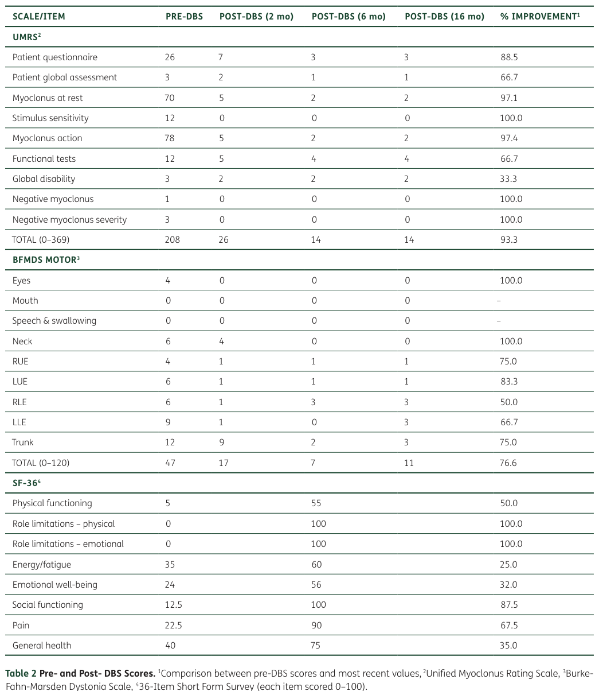

Epsilon-sarcoglycan, transmembrane glycoprotein (~437 AA, ~43-50 kDa) that is component of sarcoglycan family within dystrophin-associated glycoprotein complex (DGC). Single-pass membrane protein with large N-terminal extracellular domain (heavily glycosylated, disulfide-bonded), transmembrane segment, and small cytoplasmic tail. Contains conserved N-linked glycosylation sites and cysteine residues. Maternally imprinted gene - maternal allele silenced, only paternal copy expressed in most tissues, resulting in autosomal-dominant inheritance with reduced penetrance (pathogenic variants usually cause disease only when inherited from father). Over 40 alternative transcript isoforms including brain-specific variants. In striated/cardiac muscle: component of sarcoglycan subcomplex within DGC at sarcolemma, forms physical link between intracellular cytoskeleton (via dystrophin) and extracellular matrix (via dystroglycan-laminin binding), stabilizing sarcolemma and protecting muscle fibers from contraction damage. ~60% sequence identity to α-sarcoglycan and can functionally substitute for it - overexpression in α-sarcoglycan-deficient mice rescues muscular dystrophy. In smooth muscle: replaces α-sarcoglycan as predominant isoform, partners with β-, δ-, ζ-sarcoglycan forming unique tetrameric assembly, maintaining same adhesive function linking muscle cortex to ECM. Loss of any sarcoglycan destabilizes entire complex causing mislocalization and degradation of remaining subunits. Primary molecular function is structural - integrates into DGC to maintain sarcolemmal integrity and resist mechanical stress (mechanoprotective role). In CNS: highly expressed in cerebral cortex, basal ganglia, hippocampus, cerebellum, olfactory bulb. Incorporated into DGC-like complexes in brain, co-assembling with β-, δ-, γ-, ζ-sarcoglycan and co-purifying with dystroglycans and dystrophin/utrophin. Predominantly neuronal expression (also perivascular astrocytes and brain blood vessels). Critical role in synaptic organization, particularly at inhibitory GABAergic synapses - functions as scaffold stabilizing synaptic proteins and neurotransmitter receptors. Localized in punctate pattern at synapses, co-distributed with GABA_A receptors in hippocampal pyramidal neurons and cerebellar Purkinje cells. Helps organize/anchor GABA_A receptor clusters in postsynaptic membrane. Loss disrupts GABAergic neurotransmission: impaired GABA_A receptor clustering, reduced tonic inhibitory currents, deficits in synaptic inhibition, culminating in myoclonic jerks and dystonia-like movements resembling myoclonus-dystonia syndrome. Links epsilon-sarcoglycan's molecular role to inhibitory neural circuit function. May influence calcium homeostasis and signaling in neurons. Also present in retina at inner/outer limiting membranes with Müller glial cell endfeet, potentially contributing to glial polarity, adhesion, or blood-retina barrier. Enriched in brain microvasculature, possibly supporting neurovascular unit and blood-brain barrier integrity. Mutations cause myoclonus-dystonia syndrome (NOT limb-girdle muscular dystrophy like other sarcoglycans) - hyperkinetic movements and dystonia from imbalance in neurotransmission (deficit in inhibitory signaling). No skeletal muscle disease because abundant α-sarcoglycan compensates, whereas smooth muscle and CNS rely on epsilon-sarcoglycan as primary isoform.
| GO Term | Evidence | Action | Reason |
|---|---|---|---|
|
GO:0016012
sarcoglycan complex
|
IBA
GO_REF:0000033 |
ACCEPT |
Summary: SGCE is a bona fide component of the sarcoglycan subcomplex within the dystrophin-glycoprotein complex. Assembly occurs stepwise in ER with beta-/delta-sarcoglycans forming core to which epsilon-sarcoglycan binds. Confirmed by biochemical studies in muscle and smooth muscle tissues where SGCE assembles with other sarcoglycans.
Reason: Core molecular complex assignment. IBA annotation phylogenetically sound. Direct experimental evidence from multiple studies confirms SGCE as integral sarcoglycan complex component in multiple tissue types. Deep research confirms SGCE functions within tetra/pentameric sarcoglycan assemblies.
Supporting Evidence:
PMID:9475163
The sarcoglycans are transmembrane proteins within the DGC, and the function of the sarcoglycans is unknown
PMID:9405466
The sarcoglycans are transmembrane components of the dystrophin-glycoprotein complex
file:human/SGCE/SGCE-deep-research-perplexity.md
In striated muscle tissue, the assembly process involves formation of an initial core unit between beta-sarcoglycan and delta-sarcoglycan, to which either alpha-sarcoglycan or epsilon-sarcoglycan can subsequently bind depending on tissue type. The final component gamma-sarcoglycan is added last to complete the complex assembly.
file:human/SGCE/SGCE-deep-research-openai.md
See deep research file for comprehensive analysis
file:human/SGCE/SGCE-deep-research-falcon.md
Sarcoglycans are classically described as forming **subcomplexes within
the dystrophin-associated glycoprotein complex (DGC)**, which stabilizes
the plasma membrane and links the cytoskeleton to the extracellular matrix
in muscle; SGCE is recognized as part of **DGC-like complexes** in the
nervous system as well.
|
|
GO:0005794
Golgi apparatus
|
IEA
GO_REF:0000120 |
KEEP AS NON CORE |
Summary: SGCE transiently localizes to Golgi during biosynthesis where it undergoes N-glycosylation. This is a trafficking intermediate, not the functional site where SGCE performs its primary role.
Reason: Transient localization during protein maturation and glycosylation. Not the site of SGCE's functional activity. Many disease-causing missense mutations result in ER/Golgi retention and degradation rather than trafficking to plasma membrane, indicating this is quality control compartment rather than functional site.
Supporting Evidence:
file:human/SGCE/SGCE-uniprot.txt
PTM: N-glycosylated
file:human/SGCE/SGCE-deep-research-perplexity.md
The epsilon-sarcoglycan protein functions as a component of the sarcoglycan subcomplex, which assembles through specific protein-protein interactions within the endoplasmic reticulum before trafficking to the cell membrane
file:human/SGCE/SGCE-deep-research-falcon.md
In iPSC-derived cortical neurons, a missense variant produced
ε-sarcoglycan detectable in whole-cell lysates but not at the cell surface;
proteasome inhibition increased total protein but did not restore surface
localization, consistent with a **trafficking/processing defect** rather
than simple loss of abundance.
|
|
GO:0005856
cytoskeleton
|
IEA
GO_REF:0000044 |
MODIFY |
Summary: SGCE does not directly localize to cytoskeleton but connects to it indirectly through DGC. The DGC links F-actin cytoskeleton (via dystrophin binding) to extracellular matrix. SGCE is membrane-spanning component that bridges this connection but is not itself a cytoskeletal protein.
Reason: Too imprecise - SGCE is transmembrane protein in DGC that indirectly associates with cytoskeleton, not a cytoskeletal protein per se. The term 'cytoskeleton' suggests SGCE is part of cytoskeletal structure itself. Better annotation would be its role in DGC complex or as structural molecule linking membrane to cytoskeleton.
Proposed replacements:
dystrophin-associated glycoprotein complex
Supporting Evidence:
PMID:9405466
The sarcoglycans are transmembrane components of the dystrophin-glycoprotein complex, which links the cytoskeleton to the extracellular matrix
file:human/SGCE/SGCE-deep-research-perplexity.md
The primary established function of the DGC, and consequently epsilon-sarcoglycan's role within it, involves providing mechanical stability to the plasma membrane and linking the intracellular actin cytoskeleton to the extracellular matrix through laminin interactions
|
|
GO:0016012
sarcoglycan complex
|
IEA
GO_REF:0000120 |
ACCEPT |
Summary: Duplicate of IBA annotation above. SGCE is integral component of sarcoglycan complex.
Reason: Core complex. Duplicate annotation with different evidence code is acceptable - IEA provides computational support while IBA provides phylogenetic support for same biological fact.
|
|
GO:0016020
membrane
|
IEA
GO_REF:0000002 |
ACCEPT |
Summary: SGCE is single-pass transmembrane protein with extracellular N-terminal domain, transmembrane helix, and cytoplasmic C-terminal domain. Spans membrane once.
Reason: Accurate but very general cellular component term. SGCE is definitively a membrane protein. More specific terms like plasma membrane, sarcolemma, and synaptic membranes capture functional sites, but this general term is not incorrect.
|
|
GO:0030425
dendrite
|
IEA
GO_REF:0000044 |
ACCEPT |
Summary: SGCE is highly expressed in CNS neurons including cortical pyramidal neurons, cerebellar Purkinje cells, and hippocampal neurons. Brain-specific isoforms show dendritic localization. SGCE-deficient neurons show increased dendritic spine density and altered dendritic arbor complexity.
Reason: Well-supported neuronal localization. Deep research confirms SGCE expression in dendrites of multiple neuronal populations. Functional studies demonstrate role in dendritic spine formation and morphology. Core neuronal component term.
Supporting Evidence:
file:human/SGCE/SGCE-deep-research-perplexity.md
In the hippocampus, SGCE is highly expressed in pyramidal neurons of all CA (Cornu Ammonis) regions, while in the cerebral cortex, expression is prominent in cortical neurons
file:human/SGCE/SGCE-deep-research-perplexity.md
SGCE-mutant neurons show alterations in overall neuronal morphology characterized by more complex dendritic arbors with greater numbers of branches and longer branch lengths compared to wild-type neurons
|
|
GO:0042383
sarcolemma
|
IEA
GO_REF:0000044 |
ACCEPT |
Summary: SGCE localizes to sarcolemma (muscle plasma membrane) in striated and smooth muscle where it is component of DGC. In muscle, DGC links intracellular cytoskeleton to extracellular matrix, stabilizing sarcolemma during contraction.
Reason: Well-established muscle localization. SGCE is expressed in muscle tissue as part of DGC at sarcolemma. However, SGCE mutations do not cause muscle disease (unlike other sarcoglycans) because alpha-sarcoglycan compensates in skeletal muscle. Primary pathology is neurological, not muscular.
Supporting Evidence:
file:human/SGCE/SGCE-uniprot.txt
SUBCELLULAR LOCATION: Cell membrane, sarcolemma; Single-pass membrane protein
PMID:17993586
beta-dystroglycan, beta-, delta-, and epsilon-sarcoglycan, and dystrophin abundance increased six- to eightfold in association with smooth muscle myosin heavy chain (smMHC) and calponin accumulation during 4-day serum deprivation [in airway smooth muscle]
|
|
GO:0045202
synapse
|
IEA
GO_REF:0000108 |
ACCEPT |
Summary: SGCE localizes to synapses in brain, particularly GABAergic inhibitory synapses in cerebellum and hippocampus. Brain-specific isoforms show pre- and post-synaptic localization. SGCE regulates synaptic density, spine formation, and synaptic adhesion molecules.
Reason: Core CNS functional site. Extensive evidence for synaptic localization and function. SGCE mutations disrupt GABAergic neurotransmission, alter GABA_A receptor clustering, and cause synaptic hyperexcitability. This is central to myoclonus-dystonia pathogenesis.
Supporting Evidence:
file:human/SGCE/SGCE-deep-research-perplexity.md
At the subcellular level, the two major SGCE isoforms demonstrate distinct membrane localization patterns that reflect their likely specialized functions. The ubiquitously expressed major isoform is localized to post-synaptic membrane fractions when examined through subcellular fractionation of synaptosomal preparations. In contrast, the brain-specific isoform containing exon 11b is localized to pre-synaptic membrane fractions
file:human/SGCE/SGCE-deep-research-perplexity.md
Cortical neurons carrying SGCE mutations demonstrate a significantly higher number of dendritic spines compared to isogenic wild-type controls... the numbers of excitatory synaptic terminals are dramatically elevated in SGCE-deficient neurons
|
|
GO:0005886
plasma membrane
|
IEA
GO_REF:0000107 |
ACCEPT |
Summary: SGCE is single-pass transmembrane protein that spans plasma membrane. Functional site in sarcolemma (muscle), synaptic membranes (brain), and smooth muscle. This is where SGCE performs its structural role as DGC component.
Reason: Core functional localization. SGCE is definitively plasma membrane protein - this is its primary site of function across all tissues. Appropriate general term that encompasses sarcolemma, synaptic membranes, and other tissue-specific plasma membrane domains.
|
|
GO:0032590
dendrite membrane
|
IEA
GO_REF:0000107 |
ACCEPT |
Summary: SGCE isoforms localize to dendritic membranes in CNS neurons. Major ubiquitous isoform shows postsynaptic membrane localization, while brain-specific exon 11b isoform shows presynaptic localization.
Reason: Specific and accurate neuronal membrane localization. More precise than general 'dendrite' term. Captures SGCE function in dendritic compartment of neurons where it regulates spine formation and synaptic organization.
Supporting Evidence:
file:human/SGCE/SGCE-deep-research-falcon.md
Functional motifs in brain-specific isoforms are proposed to enable
synaptic interactions: ε-SG2 is described as having a **PDZ-binding motif**
in its cytoplasmic region and a kinase consensus phosphorylation site,
consistent with regulated protein–protein interactions.
|
|
GO:0005886
plasma membrane
|
NAS
PMID:19899002 The roles of the dystrophin-associated glycoprotein complex ... |
ACCEPT |
Summary: Duplicate plasma membrane annotation from PMID:19899002 (DGC at synapse review). SGCE localizes to plasma membrane at synapses in CNS as part of DGC.
Reason: Core localization supported by literature on DGC function at synapses. PMID:19899002 is comprehensive review of dystrophin-glycoprotein complex roles at synapses. Duplicate annotations are acceptable when from different evidence sources.
Supporting Evidence:
PMID:19899002
the roles of the dystrophin-associated glycoprotein complex at the synapse
|
|
GO:0016010
dystrophin-associated glycoprotein complex
|
NAS
PMID:19899002 The roles of the dystrophin-associated glycoprotein complex ... |
ACCEPT |
Summary: SGCE is integral component of DGC, particularly in CNS where it assembles with dystroglycans, dystrophin/utrophin, and other sarcoglycans. DGC-like complexes in brain include SGCE as major sarcoglycan isoform.
Reason: Core molecular complex. PMID:19899002 specifically reviews DGC at synapses. Well-established that SGCE is DGC component. This is parent complex of sarcoglycan subcomplex and represents SGCE's primary functional context.
Supporting Evidence:
PMID:19899002
dystrophin-associated glycoprotein complex at the synapse
file:human/SGCE/SGCE-deep-research-falcon.md
In neuronal contexts, SGCE is discussed as participating in **DGC-like
complexes** rather than the canonical muscle sarcolemma DGC alone. A 2024
review summarizes that brain complexes may include **β-, δ-, ε-, and
ζ-sarcoglycans**, with proposed roles spanning synapse-associated
organization (including GABAergic synapse biology) and astrocyte/BBB-related
functions (e.g., aquaporin-4 localization).
|
|
GO:0099536
synaptic signaling
|
NAS
PMID:19899002 The roles of the dystrophin-associated glycoprotein complex ... |
ACCEPT |
Summary: SGCE plays critical role in synaptic signaling, particularly at GABAergic inhibitory synapses. SGCE mutations disrupt GABA_A receptor clustering, reduce tonic inhibitory currents, cause deficits in synaptic inhibition, and result in network hyperexcitability.
Reason: Core CNS biological process. SGCE loss-of-function causes synaptic dysfunction central to myoclonus-dystonia pathogenesis. Well-supported role in organizing synaptic proteins and modulating neurotransmission. PMID:19899002 reviews DGC roles in synaptic signaling including receptor clustering and synaptic plasticity.
Supporting Evidence:
PMID:19899002
Lack of expression of dystrophin at these sites might contribute to the behavioral defects observed in mdx mice and the mental retardation displayed by DMD patients.Dystrophin Function in Receptor Clustering and Synaptic Plasticity of Mammalian Hippocampal and Cerebellar GABAergic SynapsesIn the mammalian brain, full-length dystrophin, Dp427 is expressed at the postsynaptic membranes of hippocampal pyramidal neurons, neocortical pyramidal neurons [136], amygdala, and cerebellar Purkinje cells [133] where it colocalizes with inhibitory GABAA receptor clusters [133, 137]
file:human/SGCE/SGCE-deep-research-perplexity.md
Loss disrupts GABAergic neurotransmission: impaired GABA_A receptor clustering, reduced tonic inhibitory currents, deficits in synaptic inhibition, culminating in myoclonic jerks and dystonia-like movements
file:human/SGCE/SGCE-deep-research-falcon.md
A 2024 review summarizes that brain complexes may include **β-, δ-, ε-,
and ζ-sarcoglycans**, with proposed roles spanning synapse-associated
organization (including GABAergic synapse biology) and astrocyte/BBB-related
functions (e.g., aquaporin-4 localization).
|
|
GO:0000139
Golgi membrane
|
TAS
Reactome:R-HSA-9913332 |
KEEP AS NON CORE |
Summary: Reactome pathway for DAG1 and SSPN binding to sarcoglycan complex, occurring at Golgi during DGC assembly. Transient localization during biosynthesis.
Reason: Trafficking intermediate during DGC assembly, not functional site. Sarcoglycan complex assembles in ER, traffics through Golgi for glycosylation, then moves to plasma membrane. Golgi is biosynthetic compartment, not where SGCE performs its structural/signaling functions.
|
|
GO:0000139
Golgi membrane
|
TAS
Reactome:R-HSA-9913336 |
KEEP AS NON CORE |
Summary: Reactome pathway for sarcoglycan complex translocation to plasma membrane, passing through Golgi. Another trafficking step annotation.
Reason: Same as above - transient localization during trafficking from ER/Golgi to plasma membrane. Duplicate annotation from different Reactome pathway steps. Not functional site.
|
|
GO:0000139
Golgi membrane
|
TAS
Reactome:R-HSA-9913338 |
KEEP AS NON CORE |
Summary: Reactome pathway for sarcoglycan complex translocation to Golgi membrane. Third duplicate of Golgi trafficking annotation.
Reason: Duplicate of biosynthetic trafficking localization. Three separate Reactome pathway annotations for different steps of same trafficking process. Not incorrect but represents transient localization, not functional site.
|
|
GO:0005789
endoplasmic reticulum membrane
|
TAS
Reactome:R-HSA-9913330 |
KEEP AS NON CORE |
Summary: Reactome pathway R-HSA-9913330 for sarcoglycan complex assembly - SGCG/SGCZ and SGCA/SGCE binding to SGCB:SGCD in ER. Initial assembly of sarcoglycan complex occurs in ER membrane before trafficking.
Reason: ER is site of initial sarcoglycan complex assembly and critical for protein quality control. Misfolded SGCE mutants are retained in ER and degraded via ERAD. However, ER is biosynthetic compartment, not functional site. Disease mutations cause ER retention/degradation, preventing SGCE from reaching plasma membrane where it functions.
Supporting Evidence:
file:human/SGCE/SGCE-deep-research-perplexity.md
Studies examining SGCE missense mutants implicated in myoclonus-dystonia demonstrate that these proteins are retained intracellularly, undergo ubiquitination, and are degraded by the proteasome pathway rather than being trafficked to the plasma membrane
file:human/SGCE/SGCE-deep-research-falcon.md
**Missense variants** frequently produce misfolded proteins that are
**retained intracellularly**, undergo **ubiquitination**, and are cleared
by the **proteasome**, impairing proper trafficking to the plasma membrane.
|
|
GO:0005789
endoplasmic reticulum membrane
|
TAS
Reactome:R-HSA-9913338 |
KEEP AS NON CORE |
Summary: Duplicate ER membrane annotation from different Reactome pathway step (sarcoglycan complex translocation to Golgi).
Reason: Same as above - ER is assembly and quality control site, not functional site. Duplicate annotation acceptable.
|
|
GO:0005886
plasma membrane
|
TAS
Reactome:R-HSA-9913333 |
ACCEPT |
Summary: Reactome R-HSA-9913333 - DGC complex binds laminins at plasma membrane. SGCE as part of DGC localizes to plasma membrane where complex interacts with ECM laminins.
Reason: Core functional localization. Plasma membrane is where assembled DGC performs its structural role linking cytoskeleton to ECM. Multiple Reactome pathway annotations for plasma membrane are acceptable as they represent different functional aspects (laminin binding, dystrophin recruitment, etc).
|
|
GO:0005886
plasma membrane
|
TAS
Reactome:R-HSA-9913336 |
ACCEPT |
Summary: Reactome R-HSA-9913336 - sarcoglycan:DAG1:SSPN complex translocates to plasma membrane. Final trafficking step where assembled DGC reaches functional site.
Reason: Core functional localization. Duplicate plasma membrane annotation acceptable - represents completion of trafficking from ER/Golgi to functional site.
|
|
GO:0005886
plasma membrane
|
TAS
Reactome:R-HSA-9913339 |
ACCEPT |
Summary: Reactome R-HSA-9913339 - recruitment of dystrophin, dystrobrevin, syntrophin to DGC at plasma membrane. Assembly of full DGC including cytoplasmic components.
Reason: Core functional localization. Represents maturation of DGC at plasma membrane where SGCE-containing sarcoglycan complex recruits dystrophin and associated proteins.
|
|
GO:0005886
plasma membrane
|
TAS
Reactome:R-HSA-9914537 |
ACCEPT |
Summary: Reactome R-HSA-9914537 - DGC binds agrin and perlecan (HSPG2) at plasma membrane. ECM interactions of assembled DGC.
Reason: Core functional localization. DGC at plasma membrane interacts with multiple ECM components (laminins, agrin, perlecan). SGCE participates in these interactions as DGC component.
|
|
GO:0005794
Golgi apparatus
|
ISS
GO_REF:0000024 |
KEEP AS NON CORE |
Summary: ISS (Inferred from Sequence or Structural Similarity) annotation for Golgi based on mouse ortholog. Transient localization during biosynthesis.
Reason: Same as other Golgi annotations - trafficking intermediate, not functional site. ISS evidence based on sequence similarity to mouse Sgce which also traffics through Golgi.
|
|
GO:0005886
plasma membrane
|
ISS
GO_REF:0000024 |
ACCEPT |
Summary: ISS annotation for plasma membrane based on mouse ortholog localization. Mouse Sgce localizes to plasma membrane in muscle and brain, conserved across species.
Reason: Core functional localization. Orthology-based inference is sound - SGCE/Sgce plasma membrane localization highly conserved across mammals. Duplicate annotation with different evidence acceptable.
Supporting Evidence:
file:human/SGCE/SGCE-deep-research-falcon.md
Multiple lines of evidence support **plasma-membrane localization**
(consistent with sarcoglycans and DGC membership). In iPSC-derived neurons,
brain-specific ε-sarcoglycan was detected in the **membrane fraction** and
at the **cell surface** (cell-surface biotinylation) in control neurons,
while disease variants impaired surface localization.
|
|
GO:0032590
dendrite membrane
|
ISS
GO_REF:0000024 |
ACCEPT |
Summary: ISS annotation for dendrite membrane based on mouse ortholog. Mouse Sgce shows dendritic localization in CNS neurons similar to human.
Reason: Well-supported neuronal membrane localization conserved across species. Mouse models show similar dendritic/synaptic localization. Duplicate annotation with different evidence acceptable.
|
|
GO:0016010
dystrophin-associated glycoprotein complex
|
IDA
PMID:17993586 Expression of the dystrophin-glycoprotein complex is a marke... |
ACCEPT |
Summary: IDA (Inferred from Direct Assay) - PMID:17993586 demonstrates SGCE is component of DGC in human airway smooth muscle by Western blotting and immunocytochemistry. Shows epsilon-sarcoglycan accumulates with other DGC proteins during smooth muscle phenotype maturation.
Reason: Strong experimental evidence. Direct biochemical and immunological demonstration of SGCE in DGC. PMID:17993586 shows DGC proteins including epsilon-sarcoglycan increase together during contractile phenotype maturation in airway smooth muscle. Core molecular complex assignment.
Supporting Evidence:
PMID:17993586
Western blotting confirmed that beta-dystroglycan, beta-, delta-, and epsilon-sarcoglycan, and dystrophin abundance increased six- to eightfold in association with smooth muscle myosin heavy chain (smMHC) and calponin accumulation during 4-day serum deprivation
|
|
GO:0005886
plasma membrane
|
TAS
PMID:9475163 Human epsilon-sarcoglycan is highly related to alpha-sarcogl... |
ACCEPT |
Summary: TAS from PMID:9475163, original epsilon-sarcoglycan cloning paper by McNally et al. Identified SGCE as broadly expressed membrane protein, homolog of alpha-sarcoglycan.
Reason: Core localization from seminal paper. PMID:9475163 first described epsilon-sarcoglycan as transmembrane protein in DGC. Plasma membrane is definitively functional site. Duplicate annotation acceptable.
Supporting Evidence:
PMID:9475163
The dystrophin-glycoprotein complex (DGC) is critical for muscle membrane stability. The sarcoglycans are transmembrane proteins within the DGC
|
|
GO:0007160
cell-matrix adhesion
|
TAS
PMID:9405466 epsilon-Sarcoglycan, a broadly expressed homologue of the ge... |
ACCEPT |
Summary: PMID:9405466 by Ettinger et al. describes SGCE role in DGC which links cytoskeleton to extracellular matrix. This is core structural function - providing mechanical linkage and adhesion between cell interior and ECM.
Reason: Core biological process. SGCE participates in cell-matrix adhesion as DGC component. DGC connects intracellular cytoskeleton (via dystrophin binding actin) to ECM (via dystroglycan-laminin interaction). This mechanical linkage is essential for membrane stability. Well-supported by literature.
Supporting Evidence:
PMID:9405466
The sarcoglycans are transmembrane components of the dystrophin-glycoprotein complex, which links the cytoskeleton to the extracellular matrix in adult muscle fibers
file:human/SGCE/SGCE-deep-research-perplexity.md
The primary established function of the DGC involves providing mechanical stability to the plasma membrane and linking the intracellular actin cytoskeleton to the extracellular matrix through laminin interactions
|
|
GO:0007517
muscle organ development
|
TAS
PMID:9405466 epsilon-Sarcoglycan, a broadly expressed homologue of the ge... |
KEEP AS NON CORE |
Summary: PMID:9405466 examined SGCE expression in embryos and adults, showing broad distribution. DGC is required for muscle development. However, SGCE is not primarily a muscle developmental gene - highest expression is in adult brain.
Reason: SGCE does have role in muscle where DGC provides structural support, but this is non-core function. SGCE mutations cause neurological disease (myoclonus-dystonia), not muscle disease, despite muscle expression. Alpha-sarcoglycan compensates in skeletal muscle. Muscle development is peripheral function, not primary biological role. Brain synaptic function is core.
Supporting Evidence:
file:human/SGCE/SGCE-deep-research-perplexity.md
Affected individuals with SGCE mutations show no signs of muscle disease and maintain normal muscle function despite expression of the protein in skeletal muscle tissue
PMID:9405466
epsilon-Sarcoglycan, a broadly expressed homologue of the gene mutated in limb-girdle muscular dystrophy 2D.
|
|
GO:0016012
sarcoglycan complex
|
TAS
PMID:9475163 Human epsilon-sarcoglycan is highly related to alpha-sarcogl... |
ACCEPT |
Summary: PMID:9475163 identified epsilon-sarcoglycan as new member of sarcoglycan family with high homology to alpha-sarcoglycan. Core complex membership.
Reason: Core complex assignment from original cloning paper. SGCE definitively belongs to sarcoglycan complex. Duplicate annotation with TAS evidence from primary literature acceptable.
Supporting Evidence:
PMID:9475163
This gene, named epsilon-sarcoglycan, has an identical intron-exon structure to alpha-sarcoglycan
|
|
GO:0005198
structural molecule activity
|
TAS
PMID:9405466 epsilon-Sarcoglycan, a broadly expressed homologue of the ge... |
NEW |
Summary: SGCE functions as structural component of DGC, providing mechanical linkage between cytoskeleton and ECM. Primary molecular function is structural - maintaining membrane integrity and resisting mechanical stress. This is mechanoprotective role.
Reason: This molecular function term accurately captures SGCE's primary biochemical role. Current annotations focus on localization and complexes but lack specific molecular function term. SGCE does not have enzymatic activity - it is structural protein. Well-supported by literature on DGC function.
Supporting Evidence:
file:human/SGCE/SGCE-deep-research-perplexity.md
Primary molecular function is structural - integrates into DGC to maintain sarcolemmal integrity and resist mechanical stress (mechanoprotective role)
PMID:9405466
The sarcoglycans are transmembrane components of the dystrophin-glycoprotein complex, which links the cytoskeleton to the extracellular matrix
file:human/SGCE/SGCE-deep-research-falcon.md
ε-Sarcoglycan is a **sarcoglycan-family membrane glycoprotein** encoded by
**SGCE**, and it is best understood as a **membrane-associated
structural/signaling component** of dystrophin-associated assemblies rather
than an enzyme or transporter.
|
|
GO:0045211
postsynaptic membrane
|
IDA
file:human/SGCE/SGCE-deep-research-perplexity.md |
NEW |
Summary: Major ubiquitous SGCE isoform localizes to postsynaptic membrane in CNS neurons. Subcellular fractionation shows postsynaptic enrichment. SGCE regulates postsynaptic organization, receptor clustering, and spine formation.
Reason: More precise neuronal localization term than general 'synapse' or 'dendrite'. Direct evidence from synaptosomal fractionation studies showing postsynaptic localization of major isoform. Important for understanding CNS function and myoclonus-dystonia pathogenesis.
Supporting Evidence:
file:human/SGCE/SGCE-deep-research-perplexity.md
The ubiquitously expressed major isoform is localized to post-synaptic membrane fractions when examined through subcellular fractionation of synaptosomal preparations
file:human/SGCE/SGCE-deep-research-falcon.md
Subcellular fractionation in brain is also described as suggesting
isoform-dependent synaptic enrichment: ε-SG1 enriched postsynaptically and
ε-SG2 presynaptically (interpretation based on fractionation patterns).
|
|
GO:0007155
cell adhesion
|
TAS
PMID:9405466 epsilon-Sarcoglycan, a broadly expressed homologue of the ge... |
NEW |
Summary: SGCE participates in cell adhesion through DGC, which mediates adhesion between cell and extracellular matrix. This is broader than just cell-matrix adhesion (GO:0007160 which is already annotated) - includes general adhesive function.
Reason: Parent term of cell-matrix adhesion (GO:0007160) already annotated. Cell adhesion is appropriate general process term. SGCE's structural role inherently involves adhesion - connecting cellular compartments and resisting mechanical forces that would separate membranes from ECM.
Supporting Evidence:
file:human/SGCE/SGCE-deep-research-perplexity.md
This mechanical linkage is essential for protecting cells from contraction-induced membrane damage
PMID:9405466
epsilon-Sarcoglycan, a broadly expressed homologue of the gene mutated in limb-girdle muscular dystrophy 2D.
|
|
GO:0048814
regulation of dendrite morphogenesis
|
IDA
file:human/SGCE/SGCE-deep-research-perplexity.md |
NEW |
Summary: SGCE regulates dendritic spine density and overall dendritic morphology. SGCE-deficient neurons show increased spine density, elevated synaptic terminal numbers, and altered dendritic arbor complexity. SGCE promotes filopodia development while suppressing spine and synapse formation.
Reason: Core CNS function revealed by recent cellular studies using patient-derived iPSCs and knockout models. SGCE loss causes dramatic alterations in dendritic architecture including increased spine density, more complex arbors with greater branch numbers and lengths. SGCE overexpression increases filopodia formation. This regulatory role in dendrite morphogenesis is central to understanding myoclonus-dystonia pathogenesis.
Supporting Evidence:
file:human/SGCE/SGCE-deep-research-perplexity.md
SGCE-deficient neurons show increased spine density and elevated numbers of excitatory synaptic terminals. Overexpression of wild-type SGCE dramatically increases the number of filopodia. SGCE appears to promote filopodia development while suppressing spine and synapse formation
file:human/SGCE/SGCE-deep-research-perplexity.md
SGCE-mutant neurons show alterations in overall neuronal morphology characterized by more complex dendritic arbors with greater numbers of branches and longer branch lengths compared to wild-type neurons
|
The research report should be a detailed narrative explaining the function, biological processes, and localization of the gene product. Citations should be given for all claims.
You should prioritize authoritative reviews and primary scientific literature when conducting research. You can supplement
this with annotations you find in gene/protein databases, but these can be outdated or inaccurate.
We are specifically interested in the primary function of the gene - for enzymes, what reaction is catalyzed, and what is the substrate specificity? For transporters, what is the substrate? For structural proteins or adapters, what is the broader structural role? For signaling molecules, what is the role in the pathway.
We are interested in where in or outside the cell the gene product carries out its function.
We are also interested in the signaling or biochemical pathways in which the gene functions. We are less interested in broad pleiotropic effects, except where these elucidate the precise role.
Include evidence where possible. We are interested in both experimental evidence as well as inference from structure, evolution, or bioinformatic analysis. Precise studies should be prioritized over high-throughput, where available.
The requested target is human SGCE, encoding ε-sarcoglycan (epsilon-sarcoglycan; ε-SG) with UniProt accession O43556. The literature summarized below explicitly describes SGCE/ε-sarcoglycan as a sarcoglycan-family, single-pass transmembrane protein associated with dystrophin-associated glycoprotein complex (DGC)/sarcoglycan complexes, matching the identity and family/domain context in the prompt. (cazurrogutierrez2021εsarcoglycanunravelingthe pages 2-4, menozzi2019twentyyearson pages 3-4, li2024decipheringthepathophysiological pages 3-5)
ε-Sarcoglycan is a sarcoglycan-family membrane glycoprotein encoded by SGCE, and it is best understood as a membrane-associated structural/signaling component of dystrophin-associated assemblies rather than an enzyme or transporter. (cazurrogutierrez2021εsarcoglycanunravelingthe pages 2-4, menozzi2019twentyyearson pages 3-4)
Canonical descriptions indicate SGCE encodes a single-pass transmembrane protein of ~437 amino acids (~47 kDa) with an extracellular N-terminus, a single transmembrane helix, and a cytoplasmic C-terminal tail; one review provides residue-level topology (extracellular 1–317, transmembrane 318–338, intracellular 339–437). (cazurrogutierrez2021εsarcoglycanunravelingthe pages 2-4)
Domain-level annotations reported in the literature include an N-terminal Ig-like/cadherin-like domain and putative calcium-binding features (“calcium-binding pockets”) characteristic of sarcoglycan-family members. (cazurrogutierrez2021εsarcoglycanunravelingthe pages 2-4, menozzi2019twentyyearson pages 3-4)
Sarcoglycans are classically described as forming subcomplexes within the dystrophin-associated glycoprotein complex (DGC), which stabilizes the plasma membrane and links the cytoskeleton to the extracellular matrix in muscle; SGCE is recognized as part of DGC-like complexes in the nervous system as well. (cazurrogutierrez2021εsarcoglycanunravelingthe pages 4-6, menozzi2019twentyyearson pages 8-10)
Current evidence supports SGCE as a membrane scaffolding/organizing protein whose key functional consequence is correct assembly/localization of DGC/sarcoglycan complexes and, in neurons, potentially synaptic membrane specialization and associated signaling homeostasis rather than catalysis. This interpretation is supported by (i) DGC association, (ii) neuronal isoform specialization, and (iii) pathogenic variants disrupting membrane trafficking and surface localization. (cazurrogutierrez2021εsarcoglycanunravelingthe pages 4-6, cazurrogutierrez2021εsarcoglycanunravelingthe pages 13-14, grutz2023investigatingthemolecular pages 1-2)
SGCE is widely expressed, with strong emphasis on CNS expression in the literature. High SGCE expression is reported across neuronal regions including olfactory bulb, hippocampus, cortex, and cerebellum; brain-enriched transcripts are noted in the cerebellum, including Purkinje-cell-associated expression patterns for brain-specific isoforms. (cazurrogutierrez2021εsarcoglycanunravelingthe pages 4-6, li2024decipheringthepathophysiological pages 3-5)
SGCE shows extensive alternative splicing in humans, including >40 protein-coding isoforms reported in one review. Two commonly discussed isoforms are a ubiquitous ε-SG1 and a brain-specific ε-SG2 (with additional isoforms such as ε-SG3 described). Incorporation of exon 11b is highlighted as brain-enriched (reported at ~30% of SGCE brain transcripts). (cazurrogutierrez2021εsarcoglycanunravelingthe pages 4-6, cazurrogutierrez2021εsarcoglycanunravelingthe pages 2-4)
Functional motifs in brain-specific isoforms are proposed to enable synaptic interactions: ε-SG2 is described as having a PDZ-binding motif in its cytoplasmic region and a kinase consensus phosphorylation site, consistent with regulated protein–protein interactions. (cazurrogutierrez2021εsarcoglycanunravelingthe pages 4-6)
Multiple lines of evidence support plasma-membrane localization (consistent with sarcoglycans and DGC membership). In iPSC-derived neurons, brain-specific ε-sarcoglycan was detected in the membrane fraction and at the cell surface (cell-surface biotinylation) in control neurons, while disease variants impaired surface localization. (grutz2023investigatingthemolecular pages 1-2)
Subcellular fractionation in brain is also described as suggesting isoform-dependent synaptic enrichment: ε-SG1 enriched postsynaptically and ε-SG2 presynaptically (interpretation based on fractionation patterns). (cazurrogutierrez2021εsarcoglycanunravelingthe pages 4-6)
In neuronal contexts, SGCE is discussed as participating in DGC-like complexes rather than the canonical muscle sarcolemma DGC alone. A 2024 review summarizes that brain complexes may include β-, δ-, ε-, and ζ-sarcoglycans, with proposed roles spanning synapse-associated organization (including GABAergic synapse biology) and astrocyte/BBB-related functions (e.g., aquaporin-4 localization). (li2024decipheringthepathophysiological pages 3-5)
A mechanistic synthesis in expert reviews proposes that loss of ε-sarcoglycan function may disturb neuronal membrane stability and calcium homeostasis with downstream consequences for dopaminergic signaling, contributing to myoclonus-dystonia pathophysiology. (menozzi2019twentyyearson pages 8-10, menozzi2019twentyyearson pages 3-4)
SGCE is a major genetic cause of myoclonus-dystonia (M-D), a childhood-onset movement disorder typically featuring upper-body myoclonic jerks and dystonia, often accompanied by psychiatric symptoms. (cazurrogutierrez2021εsarcoglycanunravelingthe pages 1-2, menozzi2019twentyyearson pages 3-4)
A review reports an estimated prevalence of ~2 per 1,000,000 in Europe. (cazurrogutierrez2021εsarcoglycanunravelingthe pages 1-2)
More than 100 pathogenic SGCE variants are described in the literature; one review reports overall SGCE variant detection rates ranging 21–80% across cohorts, and >90% detection in children meeting diagnostic criteria. (cazurrogutierrez2021εsarcoglycanunravelingthe pages 1-2)
The recurrent truncating variant c.304C>T is reported in at least 14 individuals in one review. (cazurrogutierrez2021εsarcoglycanunravelingthe pages 1-2)
A 2024 Neurology Genetics case report underscores ongoing discovery of rare/de novo variants, describing a de novo SGCE missense variant (T173C causing F58S) in a 23-year-old with childhood-onset myoclonus-dystonia, and detailing clinical workup and treatment attempts. (Published April 2024; URL: https://doi.org/10.1212/nxg.0000000000200128) (klinman2024novelsgcemutation pages 1-2, klinman2024novelsgcemutation pages 2-3)
Evidence synthesized across reviews supports two major molecular mechanisms:
1) Truncating/LOF variants often lead to nonsense-mediated mRNA decay and loss of ε-sarcoglycan. (cazurrogutierrez2021εsarcoglycanunravelingthe pages 1-2, li2024decipheringthepathophysiological pages 3-5)
2) Missense variants frequently produce misfolded proteins that are retained intracellularly, undergo ubiquitination, and are cleared by the proteasome, impairing proper trafficking to the plasma membrane. (cazurrogutierrez2021εsarcoglycanunravelingthe pages 1-2)
In iPSC-derived cortical neurons, a missense variant produced ε-sarcoglycan detectable in whole-cell lysates but not at the cell surface; proteasome inhibition increased total protein but did not restore surface localization, consistent with a trafficking/processing defect rather than simple loss of abundance. (grutz2023investigatingthemolecular pages 1-2)
SGCE is a canonical example of a disease gene where parent-of-origin effects strongly influence penetrance. Multiple recent and authoritative sources describe SGCE as maternally imprinted (maternal allele typically silenced), producing predominant paternal transmission and reduced penetrance with maternal transmission. (menozzi2019twentyyearson pages 3-4, li2024decipheringthepathophysiological pages 3-5)
A 2023 counseling-focused report states maternal imprinting occurs in ~95% of cases, and gives a concrete counseling calculation: an affected mother has a 1/2 chance to transmit the variant, but only ~5% of maternally inherited pathogenic alleles are expressed, yielding ~2.5% per-child probability of expressing the phenotype (1/2 × 1/20 = 1/40). (Published Aug 2023; URL: https://doi.org/10.5334/tohm.783) (higinbotham2023ageneticspearl pages 1-2)
A 2024 clinical case report similarly emphasizes maternal allele silencing and notes that maternally inherited mutations are observed in <5% of cases, consistent with imprinting-driven reduced penetrance. (Published Apr 2024; URL: https://doi.org/10.1212/nxg.0000000000200128) (klinman2024novelsgcemutation pages 1-2)
A 2023 open-access case report describes bilateral GPi deep brain stimulation in a patient with myoclonus-dystonia associated with maternal uniparental disomy of chromosome 7 (mUPD7) and Russell–Silver syndrome features. The report documents substantial and durable improvement, with outcomes quantified by standard scales: UMRS total improved from 208 pre-DBS to 14 at 16 months (reported as 93.3% improvement) and BFMDS motor score improved from 47 to 11 (76.6% improvement); quality-of-life metrics (SF-36 subscales) also improved. (Published Oct 30, 2023; URL: https://doi.org/10.5334/tohm.782) (shpiner2023deepbrainstimulation pages 5-6, shpiner2023deepbrainstimulation pages 1-3)
DBS programming parameters and trajectory details are also described (e.g., 130 Hz stimulation, pulse width 90 µs initially then 60 µs, amplitude increased from 2 mA bilaterally to 4.3 mA). (shpiner2023deepbrainstimulation pages 3-5, shpiner2023deepbrainstimulation pages 5-6)
A 2024 review highlights pluripotent stem cell-derived models as a key strategy to investigate SGCE myoclonus-dystonia mechanisms. It reiterates imprinting via CpG methylation at promoter/exon 1, the importance of isoform/exon-specific expression in brain, and the concept that SGCE participates in heterotetrameric sarcoglycan assemblies in brain. (Published Sep 2024; URL: https://doi.org/10.3390/cells13181520) (li2024decipheringthepathophysiological pages 3-5)
The 2024 Neurology Genetics case report demonstrates the utility of trio whole-exome sequencing in atypical or sporadic cases and provides mechanistic interpretation that the identified F58S substitution likely affects protein stability/structure based on the region’s secondary structure context and nearby destabilizing variants. (Published Apr 2024; URL: https://doi.org/10.1212/nxg.0000000000200128) (klinman2024novelsgcemutation pages 2-3)
A 2023 Journal of Biological Chemistry study reports a noncanonical role for SGCE in triple-negative breast cancer (TNBC) stemness. The authors report that SGCE can translocate to the nucleus, interact with Sp1, and promote transcription of FGF-BP1, which then activates FGF–FGFR signaling to promote stemness-associated phenotypes. Pharmacologic inhibition of FGFR with infigratinib (1 µM, 48 h) reduced SGCE/FGF-BP1-induced signaling and stem-cell phenotypes in TNBC models. The paper also reports a survival analysis in 995 TNBC patients linking high FGF-BP1 and Sp1 expression with poorer overall survival, and describes use of 30 breast cancer specimens for experimental work. (Published Nov 2023; URL: https://doi.org/10.1016/j.jbc.2023.105351) (qiu2023sgcepromotesbreast pages 2-5, qiu2023sgcepromotesbreast pages 5-7, qiu2023sgcepromotesbreast pages 10-11)
Because SGCE myoclonus-dystonia can lack an obvious family history due to imprinting, sequencing-based diagnosis (gene panels or exome sequencing) and parent-of-origin-aware counseling are essential. The 2023 counseling report provides a concrete risk calculation (2.5% expressed-risk per child for affected mothers under typical imprinting assumptions), and the 2024 case report illustrates the role of exome sequencing for identifying de novo variants in sporadic disease. (higinbotham2023ageneticspearl pages 1-2, klinman2024novelsgcemutation pages 1-2)
DBS is a widely implemented symptomatic therapy in medically refractory cases. A major expert review summarizes DBS effectiveness with mean improvements reported for myoclonus and dystonia (e.g., mean amelioration 72.6% for myoclonus and 52.6% for dystonia, reported in ~88% of patients in the reviewed literature), and a 2023 case report provides detailed scale-based outcomes and programming settings. (menozzi2019twentyyearson pages 3-4, shpiner2023deepbrainstimulation pages 5-6)
iPSC-derived neuronal models provide a platform to test whether pathogenic missense variants disrupt cell-surface localization, and to probe compensatory responses of DGC components. In one iPSC neuron study, SGCE missense protein was not restored to the membrane by proteasome inhibition, suggesting that therapeutics may need to correct trafficking/processing rather than simply inhibit degradation. (grutz2023investigatingthemolecular pages 1-2)
The JBC 2023 findings propose SGCE-positive TNBC contexts may benefit from targeting downstream FGFR signaling, supported by in vitro inhibitor experiments (infigratinib) and an association of pathway components with outcomes in a large TNBC dataset. (qiu2023sgcepromotesbreast pages 2-5, qiu2023sgcepromotesbreast pages 5-7)
Expert reviews converge on the view that SGCE-related myoclonus-dystonia is not primarily a “gross neurodegeneration” but rather a disorder of neuronal circuit function and membrane/synaptic biology. Isoform-specific neuronal expression, strong response to neuromodulation, and trafficking-defect mechanisms support a model in which disrupted membrane complexes and downstream signaling (including calcium homeostasis and dopaminergic signaling changes) contribute to phenotype. (menozzi2019twentyyearson pages 8-10, menozzi2019twentyyearson pages 3-4, cazurrogutierrez2021εsarcoglycanunravelingthe pages 12-13)
Key quantitative findings consolidated from the evidence base include:
- Prevalence estimate in Europe: ~2 per 1,000,000. (cazurrogutierrez2021εsarcoglycanunravelingthe pages 1-2)
- Maternal imprinting frequency: ~95% (strongly reducing penetrance on maternal transmission). (higinbotham2023ageneticspearl pages 1-2)
- Variant spectrum: >100 pathogenic SGCE variants; diagnostic yield 21–80% across cohorts, >90% in children meeting criteria. (cazurrogutierrez2021εsarcoglycanunravelingthe pages 1-2)
- DBS outcomes: 2023 case UMRS 208→14 and BFMDS 47→11 at 16 months; programming included 130 Hz and amplitude up to 4.3 mA. (shpiner2023deepbrainstimulation pages 5-6, shpiner2023deepbrainstimulation pages 3-5)
- iPSC neuron transcriptome compensation signals: SGCD fold-change 20.96 (p=7.64×10⁻6) and SGCZ fold-change 14.67 (p=5.05×10⁻4), though qPCR validation suggested smaller changes. (grutz2023investigatingthemolecular pages 1-2)
- TNBC study cohorts: 30 breast cancer specimens and 995 TNBC patients in survival association analysis; FGFR inhibitor infigratinib 1 µM used for 48 h in cell models. (qiu2023sgcepromotesbreast pages 10-11, qiu2023sgcepromotesbreast pages 2-5, qiu2023sgcepromotesbreast pages 5-7)
The following table consolidates the functional annotation, mechanisms, and translational relevance in a structured format.
| Aspect | Key points | Evidence (study + year) | Quantitative/statistic (if available) | URL |
|---|---|---|---|---|
| Identity/topology/domains | Human SGCE matches UniProt O43556 and encodes epsilon-sarcoglycan (ε-SG), a single-pass transmembrane sarcoglycan-family protein. Reported topology: extracellular residues 1–317, transmembrane 318–338, intracellular 339–437; contains an N-terminal Ig-like/cadherin-like domain, calcium-binding features, and a consensus N-glycosylation site. (cazurrogutierrez2021εsarcoglycanunravelingthe pages 2-4, menozzi2019twentyyearson pages 3-4) | Cazurro-Gutiérrez et al., 2021; Menozzi et al., 2019 | 437 aa (~47 kDa) major isoform; additional isoforms 451 aa and 462 aa reported | https://doi.org/10.1007/s12035-021-02391-0 ; https://doi.org/10.1002/mds.27822 |
| Localization | SGCE is broadly expressed but enriched in the CNS, especially olfactory bulb, hippocampus, cortex, cerebellum; brain-enriched expression is noted in Purkinje cells, dentate nucleus neurons, basal ganglia, and hippocampus. In neurons, brain-specific ε-SG is detected at the plasma membrane; fractionation suggests ε-SG1 is more postsynaptic and ε-SG2 more presynaptic. (cazurrogutierrez2021εsarcoglycanunravelingthe pages 4-6, li2024decipheringthepathophysiological pages 3-5, grutz2023investigatingthemolecular pages 1-2) | Cazurro-Gutiérrez et al., 2021; Li et al., 2024; Grütz et al., 2023 | Single-cell data: highest transcripts in oligodendrocyte precursors, oligodendrocytes, excitatory neurons; control iPSC neurons showed surface-localized brain-specific ε-SG | https://doi.org/10.1007/s12035-021-02391-0 ; https://doi.org/10.3390/cells13181520 |
| Complex membership | ε-Sarcoglycan is part of the sarcoglycan subcomplex within dystrophin-associated glycoprotein complex (DGC) or DGC-like complexes. In brain, complexes are proposed to include β-, δ-, ε-, and ζ-sarcoglycans, with possible roles in neuronal membrane organization, GABAergic synapse biology, astrocyte/AQP4 localization, and BBB-related functions. (cazurrogutierrez2021εsarcoglycanunravelingthe pages 4-6, menozzi2019twentyyearson pages 8-10, li2024decipheringthepathophysiological pages 3-5) | Cazurro-Gutiérrez et al., 2021; Menozzi et al., 2019; Li et al., 2024 | Brain complexes specifically noted as β/δ/ε/ζ sarcoglycan assemblies | https://doi.org/10.1007/s12035-021-02391-0 ; https://doi.org/10.1002/mds.27822 ; https://doi.org/10.3390/cells13181520 |
| Neuronal isoforms | SGCE undergoes extensive alternative splicing; two major isoforms are ubiquitous ε-SG1 and brain-specific ε-SG2 (plus ε-SG3 described). ε-SG2 contains exon 11b, is enriched in cerebellum/Purkinje cells, and carries a PDZ-binding motif and a C-terminal kinase consensus phosphorylation site, consistent with specialized neuronal/synaptic interactions. (cazurrogutierrez2021εsarcoglycanunravelingthe pages 4-6, cazurrogutierrez2021εsarcoglycanunravelingthe pages 2-4) | Cazurro-Gutiérrez et al., 2021 | >40 human isoforms reported; exon 11b present in ~30% of SGCE brain transcripts | https://doi.org/10.1007/s12035-021-02391-0 |
| Imprinting genetics | SGCE-related myoclonus-dystonia is autosomal dominant with maternal imprinting: the maternal allele is silenced in most cases, so disease usually follows paternal transmission. The imprinting control involves methylation around promoter/exon 1. This is critical for counseling because an affected mother’s child may inherit the variant but often not express disease. (li2024decipheringthepathophysiological pages 3-5, cazurrogutierrez2021εsarcoglycanunravelingthe pages 1-2, higinbotham2023ageneticspearl pages 1-2, klinman2024novelsgcemutation pages 1-2) | Li et al., 2024; Cazurro-Gutiérrez et al., 2021; Higinbotham et al., 2023; Klinman et al., 2024 | Maternal imprinting in ~95% of cases; maternally inherited mutations reported in <5%; example counseling risk for an affected mother: 1/2 × 1/20 = 1/40 = 2.5% per child to express phenotype | https://doi.org/10.3390/cells13181520 ; https://doi.org/10.1007/s12035-021-02391-0 ; https://doi.org/10.5334/tohm.783 ; https://doi.org/10.1212/nxg.0000000000200128 |
| Disease association: myoclonus-dystonia | SGCE is the major known genetic cause of myoclonus-dystonia (M-D/MDS), a childhood-onset movement disorder characterized by upper-body myoclonus with dystonia and frequent psychiatric comorbidity (e.g., OCD, anxiety, depression). Many pathogenic variants are loss-of-function; truncating variants often undergo nonsense-mediated decay, while missense variants commonly cause misfolding, intracellular retention, ubiquitination, and proteasomal degradation. (cazurrogutierrez2021εsarcoglycanunravelingthe pages 1-2, menozzi2019twentyyearson pages 3-4, klinman2024novelsgcemutation pages 2-3, klinman2024novelsgcemutation pages 1-2) | Cazurro-Gutiérrez et al., 2021; Menozzi et al., 2019; Klinman et al., 2024 | Estimated prevalence in Europe: ~2 per 1,000,000; >100 pathogenic SGCE variants reported; detection varies 21–80% across cohorts, but >90% in children meeting diagnostic criteria; recurrent variant c.304C>T seen in ≥14 individuals | https://doi.org/10.1007/s12035-021-02391-0 ; https://doi.org/10.1002/mds.27822 ; https://doi.org/10.1212/nxg.0000000000200128 |
| DBS outcomes | For medication-refractory SGCE-related or SGCE-pathway myoclonus-dystonia, deep brain stimulation (DBS) is an established symptomatic therapy; GPi is commonly used and often improves both myoclonus and dystonia, with benefits sustained over months to years. In the 2023 mUPD7-associated case, bilateral GPi DBS produced major functional recovery and quality-of-life gains. (menozzi2019twentyyearson pages 3-4, shpiner2023deepbrainstimulation pages 3-5, shpiner2023deepbrainstimulation pages 5-6, shpiner2023deepbrainstimulation pages 1-3) | Menozzi et al., 2019; Shpiner et al., 2023 | Review-level averages: 72.6% myoclonus and 52.6% dystonia improvement in ~88% of patients; 2023 case: UMRS 208→14 (93.3% improvement) and BFMDS 47→11 (76.6% improvement) at 16 months; DBS settings included 130 Hz, pulse width 90→60 µs, amplitude 2→4.3 mA | https://doi.org/10.1002/mds.27822 ; https://doi.org/10.5334/tohm.782 |
| iPSC findings | Patient-derived cortical neurons support a trafficking defect model: control neurons show brain-specific ε-SG at the cell surface, while the pathogenic missense protein can be present in lysates but fail to reach the membrane. Proteasome inhibition (MG132) increases total mutant protein but does not restore membrane localization, implicating defective processing/trafficking rather than simple shortage. (grutz2023investigatingthemolecular pages 1-2) | Grütz et al., 2023 | Variants studied: c.298T>G (p.Trp100Gly) and c.304C>T (p.Arg102Ter); transcriptome changes included SGCD fold-change 20.96 (p = 7.64×10^-6) and SGCZ fold-change 14.67 (p = 5.05×10^-4) | 2023 study listed in library as “Investigating the molecular and cellular basis of ε-sarcoglycan-associated myoclonus-dystonia in an iPSC-derived neuronal model” |
| Cancer findings | Outside neurology, SGCE has been implicated in triple-negative breast cancer (TNBC) stemness. Qiu et al. report that SGCE can move from membrane/cytoplasm to the nucleus, interact with Sp1, enhance FGF-BP1 transcription, and thereby increase FGF/FGFR, ERK, and AKT signaling. These data suggest SGCE may have context-dependent noncanonical signaling functions beyond DGC biology. (qiu2023sgcepromotesbreast pages 10-11, qiu2023sgcepromotesbreast pages 2-5, qiu2023sgcepromotesbreast pages 1-2, qiu2023sgcepromotesbreast pages 9-10, qiu2023sgcepromotesbreast pages 5-7) | Qiu et al., 2023 | Human cohort: 30 breast cancer specimens; survival analysis in 995 TNBC patients associated high FGF-BP1/Sp1 with poorer OS; experiments commonly n = 3; FGFR inhibitor infigratinib 1 µM for 48 h reduced SGCE/FGF-BP1-induced stem-cell phenotypes; FGF2 rescue used 40 ng/mL | https://doi.org/10.1016/j.jbc.2023.105351 |
Table: This table summarizes verified functional annotation, disease biology, and translational findings for human SGCE/epsilon-sarcoglycan (UniProt O43556). It consolidates canonical protein features with recent clinical and mechanistic evidence, including imprinting, DBS outcomes, iPSC trafficking defects, and emerging cancer-related functions.
Cropped evidence from the 2023 DBS case report includes: (i) Table 2 showing UMRS/BFMDS/SF-36 changes over time, (ii) Table 1 showing DBS settings at 1 and 31 months, and (iii) Figure 1 showing bilateral GPi lead placement. (shpiner2023deepbrainstimulation media c6492119, shpiner2023deepbrainstimulation media 963f0504, shpiner2023deepbrainstimulation media 3ac7d5b5)
Despite strong genetic and clinical evidence for SGCE’s role in myoclonus-dystonia, reviews emphasize persistent mechanistic gaps: which neuronal protein partners directly bind ε-sarcoglycan isoforms, how DGC-like complexes differ between brain cell types, and how isoform-specific loss translates into circuit dysfunction. Further, the TNBC findings suggest SGCE can have context-dependent nuclear functions, which may not generalize to neurons and requires independent validation across tissues and isoforms. (cazurrogutierrez2021εsarcoglycanunravelingthe pages 12-13, qiu2023sgcepromotesbreast pages 5-7)
References
(cazurrogutierrez2021εsarcoglycanunravelingthe pages 2-4): Ana Cazurro-Gutiérrez, Anna Marcé-Grau, Marta Correa-Vela, Ainara Salazar, María I. Vanegas, Alfons Macaya, Àlex Bayés, and Belén Pérez-Dueñas. Ε-sarcoglycan: unraveling the myoclonus-dystonia gene. Molecular Neurobiology, 58:3938-3952, Apr 2021. URL: https://doi.org/10.1007/s12035-021-02391-0, doi:10.1007/s12035-021-02391-0. This article has 14 citations and is from a peer-reviewed journal.
(menozzi2019twentyyearson pages 3-4): Elisa Menozzi, Bettina Balint, Anna Latorre, Enza Maria Valente, John C. Rothwell, and Kailash P. Bhatia. Twenty years on: myoclonus‐dystonia and ε‐sarcoglycan — neurodevelopment, channel, and signaling dysfunction. Movement Disorders, 34:1588-1601, Aug 2019. URL: https://doi.org/10.1002/mds.27822, doi:10.1002/mds.27822. This article has 62 citations and is from a highest quality peer-reviewed journal.
(li2024decipheringthepathophysiological pages 3-5): Zongze Li, Laura Abram, and Kathryn J. Peall. Deciphering the pathophysiological mechanisms underpinning myoclonus dystonia using pluripotent stem cell-derived cellular models. Cells, 13:1520, Sep 2024. URL: https://doi.org/10.3390/cells13181520, doi:10.3390/cells13181520. This article has 0 citations.
(cazurrogutierrez2021εsarcoglycanunravelingthe pages 4-6): Ana Cazurro-Gutiérrez, Anna Marcé-Grau, Marta Correa-Vela, Ainara Salazar, María I. Vanegas, Alfons Macaya, Àlex Bayés, and Belén Pérez-Dueñas. Ε-sarcoglycan: unraveling the myoclonus-dystonia gene. Molecular Neurobiology, 58:3938-3952, Apr 2021. URL: https://doi.org/10.1007/s12035-021-02391-0, doi:10.1007/s12035-021-02391-0. This article has 14 citations and is from a peer-reviewed journal.
(menozzi2019twentyyearson pages 8-10): Elisa Menozzi, Bettina Balint, Anna Latorre, Enza Maria Valente, John C. Rothwell, and Kailash P. Bhatia. Twenty years on: myoclonus‐dystonia and ε‐sarcoglycan — neurodevelopment, channel, and signaling dysfunction. Movement Disorders, 34:1588-1601, Aug 2019. URL: https://doi.org/10.1002/mds.27822, doi:10.1002/mds.27822. This article has 62 citations and is from a highest quality peer-reviewed journal.
(cazurrogutierrez2021εsarcoglycanunravelingthe pages 13-14): Ana Cazurro-Gutiérrez, Anna Marcé-Grau, Marta Correa-Vela, Ainara Salazar, María I. Vanegas, Alfons Macaya, Àlex Bayés, and Belén Pérez-Dueñas. Ε-sarcoglycan: unraveling the myoclonus-dystonia gene. Molecular Neurobiology, 58:3938-3952, Apr 2021. URL: https://doi.org/10.1007/s12035-021-02391-0, doi:10.1007/s12035-021-02391-0. This article has 14 citations and is from a peer-reviewed journal.
(grutz2023investigatingthemolecular pages 1-2): K Grütz, P Seibler, E Glaab, and A Weißbach. Investigating the molecular and cellular basis of ε-sarcoglycan-associated myoclonus-dystonia in an ipsc-derived neuronal model. Unknown journal, 2023.
(cazurrogutierrez2021εsarcoglycanunravelingthe pages 1-2): Ana Cazurro-Gutiérrez, Anna Marcé-Grau, Marta Correa-Vela, Ainara Salazar, María I. Vanegas, Alfons Macaya, Àlex Bayés, and Belén Pérez-Dueñas. Ε-sarcoglycan: unraveling the myoclonus-dystonia gene. Molecular Neurobiology, 58:3938-3952, Apr 2021. URL: https://doi.org/10.1007/s12035-021-02391-0, doi:10.1007/s12035-021-02391-0. This article has 14 citations and is from a peer-reviewed journal.
(klinman2024novelsgcemutation pages 1-2): Eva Klinman, Catherine Gooch, Joel S. Perlmutter, Albert A. Davis, and Baijayanta Maiti. Novel sgce mutation in a patient with myoclonus-dystonia. Neurology Genetics, Apr 2024. URL: https://doi.org/10.1212/nxg.0000000000200128, doi:10.1212/nxg.0000000000200128. This article has 2 citations.
(klinman2024novelsgcemutation pages 2-3): Eva Klinman, Catherine Gooch, Joel S. Perlmutter, Albert A. Davis, and Baijayanta Maiti. Novel sgce mutation in a patient with myoclonus-dystonia. Neurology Genetics, Apr 2024. URL: https://doi.org/10.1212/nxg.0000000000200128, doi:10.1212/nxg.0000000000200128. This article has 2 citations.
(higinbotham2023ageneticspearl pages 1-2): Alissa S. Higinbotham, Suzanne D. DeBrosse, and Camilla W. Kilbane. A genetics pearl for counseling patients with epsilon-sarcoglycan myoclonus-dystonia. Tremor and Other Hyperkinetic Movements, Aug 2023. URL: https://doi.org/10.5334/tohm.783, doi:10.5334/tohm.783. This article has 1 citations and is from a peer-reviewed journal.
(shpiner2023deepbrainstimulation pages 5-6): Danielle S. Shpiner, Taylor K. Peabody, Corneliu C. Luca, Jonathan Jagid, and Henry Moore. Deep brain stimulation for an unusual presentation of myoclonus dystonia associated with russell-silver syndrome. Tremor and Other Hyperkinetic Movements, Oct 2023. URL: https://doi.org/10.5334/tohm.782, doi:10.5334/tohm.782. This article has 1 citations and is from a peer-reviewed journal.
(shpiner2023deepbrainstimulation pages 1-3): Danielle S. Shpiner, Taylor K. Peabody, Corneliu C. Luca, Jonathan Jagid, and Henry Moore. Deep brain stimulation for an unusual presentation of myoclonus dystonia associated with russell-silver syndrome. Tremor and Other Hyperkinetic Movements, Oct 2023. URL: https://doi.org/10.5334/tohm.782, doi:10.5334/tohm.782. This article has 1 citations and is from a peer-reviewed journal.
(shpiner2023deepbrainstimulation pages 3-5): Danielle S. Shpiner, Taylor K. Peabody, Corneliu C. Luca, Jonathan Jagid, and Henry Moore. Deep brain stimulation for an unusual presentation of myoclonus dystonia associated with russell-silver syndrome. Tremor and Other Hyperkinetic Movements, Oct 2023. URL: https://doi.org/10.5334/tohm.782, doi:10.5334/tohm.782. This article has 1 citations and is from a peer-reviewed journal.
(qiu2023sgcepromotesbreast pages 2-5): Ting Qiu, Lei Hou, Lina Zhao, Xinye Wang, Zhongmei Zhou, Chuanyu Yang, Huifeng Zhang, Dewei Jiang, Baowei Jiao, and Ceshi Chen. Sgce promotes breast cancer stemness by promoting the transcription of fgf-bp1 by sp1. Journal of Biological Chemistry, 299:105351, Nov 2023. URL: https://doi.org/10.1016/j.jbc.2023.105351, doi:10.1016/j.jbc.2023.105351. This article has 13 citations and is from a domain leading peer-reviewed journal.
(qiu2023sgcepromotesbreast pages 5-7): Ting Qiu, Lei Hou, Lina Zhao, Xinye Wang, Zhongmei Zhou, Chuanyu Yang, Huifeng Zhang, Dewei Jiang, Baowei Jiao, and Ceshi Chen. Sgce promotes breast cancer stemness by promoting the transcription of fgf-bp1 by sp1. Journal of Biological Chemistry, 299:105351, Nov 2023. URL: https://doi.org/10.1016/j.jbc.2023.105351, doi:10.1016/j.jbc.2023.105351. This article has 13 citations and is from a domain leading peer-reviewed journal.
(qiu2023sgcepromotesbreast pages 10-11): Ting Qiu, Lei Hou, Lina Zhao, Xinye Wang, Zhongmei Zhou, Chuanyu Yang, Huifeng Zhang, Dewei Jiang, Baowei Jiao, and Ceshi Chen. Sgce promotes breast cancer stemness by promoting the transcription of fgf-bp1 by sp1. Journal of Biological Chemistry, 299:105351, Nov 2023. URL: https://doi.org/10.1016/j.jbc.2023.105351, doi:10.1016/j.jbc.2023.105351. This article has 13 citations and is from a domain leading peer-reviewed journal.
(cazurrogutierrez2021εsarcoglycanunravelingthe pages 12-13): Ana Cazurro-Gutiérrez, Anna Marcé-Grau, Marta Correa-Vela, Ainara Salazar, María I. Vanegas, Alfons Macaya, Àlex Bayés, and Belén Pérez-Dueñas. Ε-sarcoglycan: unraveling the myoclonus-dystonia gene. Molecular Neurobiology, 58:3938-3952, Apr 2021. URL: https://doi.org/10.1007/s12035-021-02391-0, doi:10.1007/s12035-021-02391-0. This article has 14 citations and is from a peer-reviewed journal.
(qiu2023sgcepromotesbreast pages 1-2): Ting Qiu, Lei Hou, Lina Zhao, Xinye Wang, Zhongmei Zhou, Chuanyu Yang, Huifeng Zhang, Dewei Jiang, Baowei Jiao, and Ceshi Chen. Sgce promotes breast cancer stemness by promoting the transcription of fgf-bp1 by sp1. Journal of Biological Chemistry, 299:105351, Nov 2023. URL: https://doi.org/10.1016/j.jbc.2023.105351, doi:10.1016/j.jbc.2023.105351. This article has 13 citations and is from a domain leading peer-reviewed journal.
(qiu2023sgcepromotesbreast pages 9-10): Ting Qiu, Lei Hou, Lina Zhao, Xinye Wang, Zhongmei Zhou, Chuanyu Yang, Huifeng Zhang, Dewei Jiang, Baowei Jiao, and Ceshi Chen. Sgce promotes breast cancer stemness by promoting the transcription of fgf-bp1 by sp1. Journal of Biological Chemistry, 299:105351, Nov 2023. URL: https://doi.org/10.1016/j.jbc.2023.105351, doi:10.1016/j.jbc.2023.105351. This article has 13 citations and is from a domain leading peer-reviewed journal.
(shpiner2023deepbrainstimulation media c6492119): Danielle S. Shpiner, Taylor K. Peabody, Corneliu C. Luca, Jonathan Jagid, and Henry Moore. Deep brain stimulation for an unusual presentation of myoclonus dystonia associated with russell-silver syndrome. Tremor and Other Hyperkinetic Movements, Oct 2023. URL: https://doi.org/10.5334/tohm.782, doi:10.5334/tohm.782. This article has 1 citations and is from a peer-reviewed journal.
(shpiner2023deepbrainstimulation media 963f0504): Danielle S. Shpiner, Taylor K. Peabody, Corneliu C. Luca, Jonathan Jagid, and Henry Moore. Deep brain stimulation for an unusual presentation of myoclonus dystonia associated with russell-silver syndrome. Tremor and Other Hyperkinetic Movements, Oct 2023. URL: https://doi.org/10.5334/tohm.782, doi:10.5334/tohm.782. This article has 1 citations and is from a peer-reviewed journal.
(shpiner2023deepbrainstimulation media 3ac7d5b5): Danielle S. Shpiner, Taylor K. Peabody, Corneliu C. Luca, Jonathan Jagid, and Henry Moore. Deep brain stimulation for an unusual presentation of myoclonus dystonia associated with russell-silver syndrome. Tremor and Other Hyperkinetic Movements, Oct 2023. URL: https://doi.org/10.5334/tohm.782, doi:10.5334/tohm.782. This article has 1 citations and is from a peer-reviewed journal.

The SGCE gene encodes epsilon-sarcoglycan, a transmembrane glycoprotein that is part of the sarcoglycan family. Sarcoglycans are components of the dystrophin-associated glycoprotein complex (DGC), which links the cytoskeleton to the extracellular matrix in muscle and other tissues (www.ncbi.nlm.nih.gov) (pmc.ncbi.nlm.nih.gov). Like other sarcoglycans, epsilon-sarcoglycan is a single-pass membrane protein with a large N-terminal extracellular domain, a hydrophobic transmembrane segment, and a small cytoplasmic tail (www.dmd.nl) (pmc.ncbi.nlm.nih.gov). The SGCE protein (~437 amino acids, ~43–50 kDa) contains several conserved N-linked glycosylation sites and cysteine residues in its extracellular region, suggesting it is a heavily glycosylated, disulfide-bonded protein (www.dmd.nl). These features are characteristic of the sarcoglycan family and are important for proper folding, stability, and membrane localization. Importantly, SGCE is subject to genomic imprinting: the maternal allele is typically silenced, so only the paternal copy is expressed in most tissues (www.ncbi.nlm.nih.gov) (www.ncbi.nlm.nih.gov). This parent-of-origin effect results in autosomal-dominant inheritance with reduced penetrance – pathogenic variants usually cause disease only when inherited from the father (www.ncbi.nlm.nih.gov). More than 40 alternative transcript isoforms of SGCE have been reported, including several that are brain-specific, indicating complex regulation and potentially specialized functions in different cell types (pubmed.ncbi.nlm.nih.gov). Overall, SGCE encodes a structural membrane protein that plays key roles in muscle integrity and neuronal function, with unique genetic regulation (imprinting) influencing its expression and disease inheritance.
In skeletal and cardiac muscle, epsilon-sarcoglycan is a component of the sarcoglycan subcomplex within the DGC, which resides at the muscle cell plasma membrane (the sarcolemma) (www.ncbi.nlm.nih.gov) (pmc.ncbi.nlm.nih.gov). The DGC forms a physical link between the intracellular cytoskeleton (via dystrophin and associated proteins) and the extracellular matrix (via dystroglycan binding to laminin). This complex stabilizes the sarcolemma, protecting muscle fibers from damage during contraction and stretching (pmc.ncbi.nlm.nih.gov) (pmc.ncbi.nlm.nih.gov). The sarcoglycan subunits (α, β, γ, δ, and others) assemble into a tight multimERIC complex together with a small transmembrane protein called sarcospan, strengthening the connection between dystroglycan and the cytoskeleton (pmc.ncbi.nlm.nih.gov) (pmc.ncbi.nlm.nih.gov). Epsilon-sarcoglycan is highly similar in structure to α-sarcoglycan (about 60% sequence identity) and is considered a type I membrane protein (extracellular N-terminus) (pmc.ncbi.nlm.nih.gov). Notably, epsilon-sarcoglycan can functionally substitute for α-sarcoglycan in muscle: experimental overexpression of epsilon-sarcoglycan in α-sarcoglycan–deficient mice was able to rescue the muscular dystrophy phenotype (pmc.ncbi.nlm.nih.gov) (pmc.ncbi.nlm.nih.gov). This suggests that epsilon- and α-sarcoglycan have overlapping roles in providing mechanical stability to the muscle membrane. Indeed, in striated muscle the predominant sarcoglycan complex uses α-sarcoglycan, but in some contexts epsilon-sarcoglycan is present at lower levels (pmc.ncbi.nlm.nih.gov) (pmc.ncbi.nlm.nih.gov). All sarcoglycans in muscle work cooperatively: loss of any one sarcoglycan destabilizes the entire complex, leading to mislocalization and degradation of the remaining subunits (pmc.ncbi.nlm.nih.gov). Thus, the primary molecular function of epsilon-sarcoglycan in muscle is structural – it integrates into the DGC to maintain sarcolemmal integrity and resist mechanical stress (often termed a “mechanoprotective” role) (pmc.ncbi.nlm.nih.gov) (pmc.ncbi.nlm.nih.gov). Beyond this mechanical role, the sarcoglycan–sarcospan subcomplex has been implicated in signal transduction; for example, it may influence cell signaling pathways in muscle fibers, although these non-mechanical roles are not fully understood (pmc.ncbi.nlm.nih.gov).
Epsilon-sarcoglycan’s contribution is especially prominent in smooth muscle. Unlike striated muscle (which uses α-sarcoglycan), smooth muscle predominantly incorporates epsilon-sarcoglycan into its DGC. Studies have shown that in vascular smooth muscle, ε-sarcoglycan replaces α-sarcoglycan in the complex, partnering with β-, δ-, and ζ-sarcoglycan to form a unique tetrameric assembly (pmc.ncbi.nlm.nih.gov) (pmc.ncbi.nlm.nih.gov). (γ-Sarcoglycan is largely absent in smooth muscle and is replaced by the ζ isoform in this tissue (pmc.ncbi.nlm.nih.gov).) This smooth muscle complex still connects with dystrophin/utrophin and dystroglycan, indicating that epsilon-sarcoglycan fulfills the same adhesive function as α-sarcoglycan in linking the muscle cell cortex to the extracellular matrix (pmc.ncbi.nlm.nih.gov) (www.ncbi.nlm.nih.gov). Consistently, epsilon-sarcoglycan is detected at the sarcolemma of various muscle types (cardiac, smooth, and to a lesser extent skeletal muscle) and localizes to the plasma membrane in those cells (www.dmd.nl) (pubmed.ncbi.nlm.nih.gov). The presence of epsilon-sarcoglycan in smooth muscle DGCs may explain why SGCE mutations do not cause the limb-girdle muscular dystrophies seen with mutations in α-, β-, γ-, or δ-sarcoglycan (pmc.ncbi.nlm.nih.gov) (pmc.ncbi.nlm.nih.gov). In skeletal muscle, the abundant α-sarcoglycan can compensate for loss of epsilon-sarcoglycan, whereas smooth muscle and certain non-muscle tissues rely on epsilon-sarcoglycan as the primary isoform (pmc.ncbi.nlm.nih.gov) (pmc.ncbi.nlm.nih.gov). In summary, within muscle tissues SGCE’s product functions as a structural adapter in the dystrophin complex – anchoring the cytoskeleton to the extracellular matrix, preserving membrane stability, and possibly participating in mechanosensory signaling (pmc.ncbi.nlm.nih.gov) (pmc.ncbi.nlm.nih.gov).
A defining feature of SGCE is its prominent expression in the central nervous system (CNS) and its necessity for normal neuronal function. Epsilon-sarcoglycan is highly expressed in the brain, especially in neurons of the cerebral cortex, basal ganglia, hippocampus, cerebellum, and olfactory bulb (pubmed.ncbi.nlm.nih.gov). Immunolocalization and biochemical studies demonstrate that epsilon-sarcoglycan is targeted to the neuronal plasma membrane, similar to its sarcolemmal localization in muscle (pubmed.ncbi.nlm.nih.gov). Recent research has shown that epsilon-sarcoglycan is actually incorporated into DGC-like complexes in the brain. In 2016, Waite et al. purified sarcoglycan-containing complexes from mouse brains and identified epsilon-sarcoglycan co-assembling with β-, δ-, γ-, and ζ-sarcoglycan, confirming that a prototypical sarcoglycan complex exists in the brain (pmc.ncbi.nlm.nih.gov). Furthermore, under gentle extraction conditions, the brain sarcoglycan complex co-purified with known components of the dystrophin-associated protein complex (such as dystroglycans and dystrophin/utrophin), indicating that epsilon-sarcoglycan in neurons is part of a larger DGC that likely mirrors the muscle DGC (pmc.ncbi.nlm.nih.gov) (pmc.ncbi.nlm.nih.gov). Notably, SGCE is predominantly expressed in neurons, with additional lower expression in certain glial cells (e.g. perivascular astrocytes) and in brain blood vessels (pmc.ncbi.nlm.nih.gov). This widespread distribution set the stage for understanding SGCE’s role in neural circuitry.
Emerging evidence indicates that epsilon-sarcoglycan plays a crucial role in synaptic organization, particularly at inhibitory (GABAergic) synapses. A 2021/2022 study by Cazurro-Gutiérrez et al. and subsequent analyses have provided compelling data that epsilon-sarcoglycan functions as a scaffold in GABAergic synapses, stabilizing synaptic proteins and neurotransmitter receptors (pmc.ncbi.nlm.nih.gov). Epsilon-sarcoglycan has been found localized in a punctate “spot-like” pattern at synapses in neurons, often co-distributed with GABA_A receptors in regions such as hippocampal pyramidal neurons and cerebellar Purkinje cells (pmc.ncbi.nlm.nih.gov). This spatial association suggests that epsilon-sarcoglycan helps organize or anchor GABA_A receptor clusters and other synaptic components in the postsynaptic membrane (pmc.ncbi.nlm.nih.gov). Indeed, loss of SGCE disrupts GABAergic neurotransmission: in SGCE-deficient mouse models, researchers observed impaired clustering of GABA_A receptors, reduced tonic inhibitory currents, and deficits in synaptic inhibition (pmc.ncbi.nlm.nih.gov). These functional changes culminate in motor phenotypes (myoclonic jerks and dystonia-like movements) that resemble the human myoclonus-dystonia syndrome, strongly linking epsilon-sarcoglycan’s molecular role to inhibitory neural circuit function (pmc.ncbi.nlm.nih.gov). In summary, current understanding is that epsilon-sarcoglycan helps maintain proper GABAergic synaptic transmission by stabilizing inhibitory synapse structure and receptor localization (pmc.ncbi.nlm.nih.gov). This could be through direct or indirect interaction with known synaptic scaffolding systems – for example, the dystrophin–dystroglycan complex at central synapses is known to associate with GABA_A receptor clusters and stabilize them (pmc.ncbi.nlm.nih.gov) (pmc.ncbi.nlm.nih.gov). Loss of dystrophin in the brain (as in Duchenne muscular dystrophy) also leads to abnormal GABA_A receptor distribution and synaptic electrophysiology defects (pmc.ncbi.nlm.nih.gov). By analogy, epsilon-sarcoglycan (as part of the same complex) appears to be critical for the integrity of inhibitory synapses and neural network balance. Its disruption likely causes an imbalance in neurotransmission – specifically a deficit in inhibitory signaling – which can manifest as the hyperkinetic movements and dystonia seen in SGCE-associated disease (pmc.ncbi.nlm.nih.gov).
Beyond synapses, epsilon-sarcoglycan may have additional roles in the nervous system. The DGC in brain has been implicated in calcium homeostasis and signaling in neurons (pmc.ncbi.nlm.nih.gov). Patients with muscular dystrophies (lacking various DGC components) sometimes show abnormal neuronal Ca²⁺ handling and cognitive or behavioral changes (pmc.ncbi.nlm.nih.gov), suggesting the DGC (and by extension sarcoglycans) influence neuronal signaling pathways. In line with this, one hypothesis is that loss of epsilon-sarcoglycan could perturb Ca²⁺-dependent signaling cascades in certain neurons, potentially contributing to neurologic symptoms (pmc.ncbi.nlm.nih.gov). There is also evidence for epsilon-sarcoglycan expression in the retina and in glial structures of the CNS. For instance, multiple sarcoglycan subunits (β, δ, γ, ε) are present at the inner and outer limiting membranes of the retina, co-localizing with Müller glial cell endfeet (pmc.ncbi.nlm.nih.gov). Interestingly, this retinal sarcoglycan distribution occurs even in the absence of dystrophin, indicating sarcoglycans may form alternative membrane complexes beyond the canonical DGC (pmc.ncbi.nlm.nih.gov). In the retina, sarcoglycans (possibly including epsilon-sarcoglycan) might contribute to maintaining glial cell polarity, adhesion, or blood-retina barrier function, rather than synaptic transmission (pmc.ncbi.nlm.nih.gov). Similarly, a recent study detected all sarcoglycan transcripts (including SGCE) in purified brain microvasculature; δ- and ε-sarcoglycan were enriched in larger blood vessels (pmc.ncbi.nlm.nih.gov). This raises the possibility that epsilon-sarcoglycan helps support the neurovascular unit – perhaps influencing blood-brain barrier integrity or mechanotransduction in cerebral blood vessels (pmc.ncbi.nlm.nih.gov). While these non-synaptic roles are still speculative, they underscore that SGCE’s function in the nervous system is multifaceted. In summary, epsilon-sarcoglycan in the CNS primarily acts at the cell surface of neurons (and some glia), where it is integral to the architecture and stability of inhibitory synapses, and it may also participate in broader aspects of neural cell membrane organization and signaling (pmc.ncbi.nlm.nih.gov) (pmc.ncbi.nlm.nih.gov).
Subcellular localization: Epsilon-sarcoglycan is an integral membrane protein found at the plasma membrane of cells. It is a type I membrane protein, meaning its N-terminus is located extracellularly (after a cleaved signal peptide) and it has a short C-terminal cytoplasmic tail (www.dmd.nl). Consistent with this topology, SGCE protein undergoes co-translational insertion into the endoplasmic reticulum, is glycosylated in the ER/Golgi, and trafficks via the secretory pathway to the cell surface. In healthy cells, epsilon-sarcoglycan primarily resides at the cell surface membrane, often as part of larger protein complexes (e.g. the DGC at the sarcolemma or analogous complexes at synapses) (pubmed.ncbi.nlm.nih.gov) (pmc.ncbi.nlm.nih.gov). For example, immunostaining shows epsilon-sarcoglycan at the sarcolemma of muscle fibers and at neuronal cell membranes in brain tissue (www.dmd.nl) (pubmed.ncbi.nlm.nih.gov). In neurons, high-resolution studies have observed epsilon-sarcoglycan in puncta at synaptic membranes (especially in postsynaptic regions of inhibitory synapses) (pmc.ncbi.nlm.nih.gov). Importantly, proper cell-surface localization of epsilon-sarcoglycan depends on correct folding and assembly with other sarcoglycan subunits. In vitro experiments have demonstrated that certain disease-causing missense mutations (e.g., H36P, H36R, L172R) in SGCE produce misfolded proteins that fail to traffic to the plasma membrane and are instead retained inside the cell (pubmed.ncbi.nlm.nih.gov). These trapped mutant proteins become polyubiquitinated and are rapidly degraded by the proteasome (pubmed.ncbi.nlm.nih.gov), indicating the cellular quality-control system recognizes and disposes of unassembled or misfolded epsilon-sarcoglycan. This observation mirrors the general requirement that the sarcoglycan subunits assemble into a complex in the ER for stability and forward transport (pmc.ncbi.nlm.nih.gov). If any one subunit (e.g., SGCE) is missing or mutant, the complex may not form correctly, and the proteins are often retained in the ER and degraded, rather than reaching the membrane (pmc.ncbi.nlm.nih.gov). Thus, under normal conditions, epsilon-sarcoglycan’s steady-state location is on the extracellular face of the plasma membrane, where it can interact with extracellular matrix components and other membrane proteins, while a small cytosolic tail faces inward and could interact with cytoskeletal or signaling molecules.
Tissue expression: The SGCE gene is expressed in a broad range of human tissues, with notable expression in the brain and muscles. Northern blot and mRNA profiling studies (late 1990s) found SGCE transcripts in all tissues examined, with moderate expression in brain, heart, skeletal muscle, lung, and placenta, and lower levels in kidney, liver, and pancreas (www.dmd.nl). This broad pattern suggests epsilon-sarcoglycan is not muscle-specific but has roles in multiple organ systems. Protein studies similarly detected a ~45 kDa epsilon-sarcoglycan protein at the membrane of heart, skeletal muscle, kidney, liver, and lung (www.dmd.nl). In the central nervous system, SGCE is highly expressed in neuronal tissue throughout the brain (pubmed.ncbi.nlm.nih.gov). Research in mice indicates Sgce expression is largely neuronal, with some presence in glial cells, and interestingly, transcripts for SGCE and other sarcoglycans are even found in brain endothelial cells (blood vessels) (pmc.ncbi.nlm.nih.gov) (pmc.ncbi.nlm.nih.gov). In muscle tissues, there is a distinction between striated muscle and smooth muscle usage of SGCE: skeletal muscle fibers predominantly use α-sarcoglycan, but smooth muscle relies on SGCE (epsilon-sarcoglycan) as a key DGC component (pmc.ncbi.nlm.nih.gov). Epsilon-sarcoglycan is also present in cardiac muscle (which has features of both striated and smooth muscle) (www.dmd.nl). In the developing embryo, SGCE is expressed early (mouse embryonic day 8.5 and onward) (www.dmd.nl), implying a role in developmental processes such as early muscle and nervous system formation. Overall, SGCE’s expression profile is widespread, with particularly high relevance in the central nervous system, vascular and visceral (smooth) musculature, and cardiac tissue (www.ncbi.nlm.nih.gov) (www.dmd.nl). This distribution correlates with the observed phenotypes when SGCE is mutated (neurologic movement disorder without overt skeletal muscle disease) – brain and possibly certain muscle types are the primary sites of SGCE function in vivo (pmc.ncbi.nlm.nih.gov) (pmc.ncbi.nlm.nih.gov).
Mechanical stability and membrane integrity: In muscle cells, epsilon-sarcoglycan is a component of the DGC, which plays a crucial role in maintaining the integrity of the plasma membrane under mechanical stress (pmc.ncbi.nlm.nih.gov). By linking the internal actin cytoskeleton (via dystrophin) to the external basal lamina (via dystroglycan-laminin), the DGC distributes the forces generated during muscle contraction, preventing micro-tears in the sarcolemma. Although the exact function of the sarcoglycan complex was historically unclear, it is now evident that it has both mechanical and signaling roles in muscle (www.ncbi.nlm.nih.gov). Mechanically, epsilon-sarcoglycan (along with other sarcoglycans and sarcospan) strengthens the connection between α-/β-dystroglycan and the rest of the complex, essentially acting as a stabilizing strut in the membrane structure (pmc.ncbi.nlm.nih.gov) (pmc.ncbi.nlm.nih.gov). The presence of sarcoglycans has been shown to fortify the muscle fiber membrane against damage; when sarcoglycan genes are knocked out or mutated (as in limb-girdle muscular dystrophies), muscle fibers become fragile and susceptible to injury (pmc.ncbi.nlm.nih.gov) (pmc.ncbi.nlm.nih.gov). In smooth muscle and other cells, the SGCE-containing DGC likely serves a similar structural support role, and may also help muscle cells sense and respond to mechanical stretch (mechanotransduction). There is evidence that the DGC, including sarcoglycans, can modulate membrane signaling molecules – for instance, the complex can influence ion channels or signaling enzymes at the membrane. One example is that muscle DGC normally localizes neuronal nitric oxide synthase (nNOS) to the sarcolemma, affecting NO signaling in muscle; if the DGC is disrupted, nNOS mislocalizes, contributing to functional deficits (pmc.ncbi.nlm.nih.gov) (pmc.ncbi.nlm.nih.gov). While nNOS interaction is mainly through syntrophins rather than sarcoglycan directly, it illustrates how DGC components (including sarcoglycans) participate in signaling pathways that regulate muscle cell homeostasis. In summary, SGCE in muscle is part of the pathway that connects structural integrity to biochemical signaling, ensuring that muscle membranes are both mechanically resilient and properly tuned to transmembrane signals.
Synaptic and signaling pathways in neurons: In the brain, SGCE is implicated in pathways related to synaptic transmission and neural excitability. By stabilizing GABA_A receptor clusters and associated proteins at inhibitory synapses, epsilon-sarcoglycan influences the GABAergic signaling pathway, which is essential for neural inhibition and network balance (pmc.ncbi.nlm.nih.gov). Disruption of SGCE leads to deficient GABAergic inhibitory transmission (less effective synaptic inhibition), which tips the excitation/inhibition balance and can produce hyperkinetic movement disorders (as seen in myoclonus-dystonia) (pmc.ncbi.nlm.nih.gov). Therefore, SGCE can be placed in the context of the neurotransmission pathway, particularly affecting inhibitory synapse function. It likely interacts—directly or indirectly—with known synaptic scaffold proteins (for example, gephyrin, which anchors GABA_A receptors, or dystrophin/utrophin at synapses) to maintain receptor localization. This places epsilon-sarcoglycan in a functional pathway with dystrophin and dystroglycan at central synapses, which collectively regulate clustering of certain neurotransmitter receptors and ion channels (pmc.ncbi.nlm.nih.gov) (pmc.ncbi.nlm.nih.gov). Additionally, the connection between SGCE and calcium signaling has been hypothesized. The DGC in muscle is known to modulate stretch-activated channels and calcium homeostasis; analogously, in neurons, an intact DGC (including epsilon-sarcoglycan) might influence Ca²⁺ influx or internal Ca²⁺ stores in response to activity (pmc.ncbi.nlm.nih.gov). Some forms of dystonia and muscular dystrophy show abnormal neuronal Ca²⁺ handling, and SGCE-related dystonia might converge on these calcium signaling pathways (pmc.ncbi.nlm.nih.gov). Indeed, researchers have noted that other dystonia and muscle-dystrophy genes (like ANO3 and ANO5, encoding Ca²⁺-activated channels) point toward calcium signaling as a common pathway in dystonic disorders (pmc.ncbi.nlm.nih.gov). Although SGCE’s precise biochemical signaling partners in neurons are still being investigated, current data suggest that epsilon-sarcoglycan is involved in the molecular pathways of synapse maintenance, inhibitory neurotransmission, and possibly ion homeostasis in the nervous system (pmc.ncbi.nlm.nih.gov) (pmc.ncbi.nlm.nih.gov). It acts not as a classic signaling receptor or enzyme, but as a structural facilitator of signaling, ensuring that receptors and channels are correctly positioned and regulated at the cell membrane.
The physiological importance of SGCE is highlighted by the effects of its loss-of-function mutations in humans. Heterozygous mutations in SGCE are the primary cause of myoclonus-dystonia (M-D) syndrome, also known as DYT11 dystonia (pubmed.ncbi.nlm.nih.gov) (pmc.ncbi.nlm.nih.gov). Myoclonus-dystonia is a rare autosomal dominant movement disorder characterized by sudden, brief muscle jerks (myoclonus) and twisting postures or tremor (dystonia), often beginning in childhood or adolescence (pubmed.ncbi.nlm.nih.gov). The majority of pathogenic SGCE variants are loss-of-function (nonsense, frameshift, or missense causing misfolding), leading to deficient epsilon-sarcoglycan function. Due to maternal imprinting of SGCE, an affected individual usually has inherited a mutant allele from their father (paternal transmission); maternally inherited mutations are typically silenced, resulting in non-manifesting carriers (www.ncbi.nlm.nih.gov) (www.ncbi.nlm.nih.gov). (This parent-of-origin effect causes reduced penetrance – only ~5% of maternally inherited SGCE mutations cause disease symptoms (www.ncbi.nlm.nih.gov).) The absence of muscle disease in SGCE mutation carriers is a striking contrast to mutations in the other sarcoglycan genes: α-, β-, γ-, and δ-sarcoglycan mutations cause limb-girdle muscular dystrophies, whereas ε-sarcoglycan mutations cause a neurological syndrome without direct muscle weakness (pmc.ncbi.nlm.nih.gov) (pmc.ncbi.nlm.nih.gov). This dichotomy is explained by the tissue-specific roles of the sarcoglycans. SGCE’s pathological effects reflect its critical function in the brain rather than in muscle (pmc.ncbi.nlm.nih.gov) (pmc.ncbi.nlm.nih.gov). In patients with SGCE mutations, muscle tissue generally remains intact (α-sarcoglycan and others maintain the muscle DGC), but in the brain, the loss of epsilon-sarcoglycan cannot be compensated by other isoforms, leading to neural dysfunction. Post-mortem and experimental studies have found no significant dystrophic changes in muscle from SGCE mutation carriers, corroborating that the primary site of dysfunction is the nervous system (pmc.ncbi.nlm.nih.gov). Meanwhile, studies in mouse models and neuronal cell culture have illuminated what goes wrong at the cellular level: neurons lacking functional epsilon-sarcoglycan show abnormal receptor clustering at inhibitory synapses and hyperexcitability, consistent with the clinical tremor and jerking phenotypes (pmc.ncbi.nlm.nih.gov) (pmc.ncbi.nlm.nih.gov). Thus, myoclonus-dystonia can be viewed as a synaptopathy caused by loss of SGCE’s stabilizing influence on synaptic membranes.
From a biochemical perspective, many SGCE mutations result in a “null” phenotype where no functional protein reaches the membrane. Experiments have shown that certain missense mutations prevent proper folding, causing the protein to accumulate in the endoplasmic reticulum and undergo degradation (via ubiquitin-proteasome pathways) before it ever functions (pubmed.ncbi.nlm.nih.gov). The cell’s failure to deliver epsilon-sarcoglycan to the surface means the entire sarcoglycan complex may be absent from neuronal membranes. Interestingly, cellular factors like torsinA, an ER chaperone ATPase implicated in another form of dystonia (DYT1), might influence SGCE mutant handling (pubmed.ncbi.nlm.nih.gov). One study found that wild-type torsinA can modulate the trafficking and degradation of mutant epsilon-sarcoglycan, whereas the dystonia-causing mutant torsinA (ΔE302/303) is less effective, hinting at a possible intersection of dystonia pathways at the level of protein homeostasis (pubmed.ncbi.nlm.nih.gov). Although torsinA’s assistance is not fully understood, this suggests that protein quality control in the secretory pathway is crucial for SGCE – if the quality control fails or is overwhelmed, misfolded SGCE may be degraded excessively, potentially exacerbating the loss of function.
Clinically, understanding SGCE’s function has direct implications. Genetic testing for SGCE mutations is now a standard component of the work-up for patients with unexplained myoclonic tremors or dystonia, especially if there is a family history consistent with paternal inheritance. GeneReviews and neurological guidelines emphasize testing SGCE in such cases and explain the imprinting effect to patients and families (www.ncbi.nlm.nih.gov) (www.ncbi.nlm.nih.gov). For affected individuals, one “genetic counseling pearl” is that an SGCE mutation carrier has a 50% chance of passing the mutation to offspring, but if the mother is the carrier, the child’s risk of actual disease is much lower (~5% or less) due to maternal allele silencing (www.ncbi.nlm.nih.gov). This unusual inheritance pattern underscores SGCE’s unique regulation. There are currently no therapies that directly target the epsilon-sarcoglycan protein or replace its function in the brain. However, patients’ motor symptoms are often managed with medications (e.g. GABA-enhancing drugs like clonazepam or alcohol, which many patients find transiently improves myoclonus) (www.ncbi.nlm.nih.gov), and in severe cases deep brain stimulation has been used to alleviate dystonia. These treatments address the neural circuit dysfunction downstream of SGCE loss rather than the molecular defect itself.
On the research front, the link between SGCE and synaptic GABAergic function suggests that future therapies might aim to restore inhibitory synapse stability. For instance, one could envision gene therapy to reintroduce functional SGCE in the relevant neurons, or small molecules to enhance the clustering of GABA_A receptors even in the absence of epsilon-sarcoglycan. The feasibility of gene replacement is supported by the relatively small size of the SGCE coding sequence (~1.7 kb mRNA) (www.dmd.nl), which is amenable to viral vectors. Additionally, the success of epsilon-sarcoglycan in compensating for α-sarcoglycan in muscle (in mouse models) raises the possibility that epsilon-sarcoglycan or related proteins might substitute for each other if delivered to the right cells (pmc.ncbi.nlm.nih.gov) (pmc.ncbi.nlm.nih.gov). No clinical trials of SGCE gene therapy have been reported to date, but SGCE remains a compelling candidate for further research given its clear, tissue-specific disease mechanism. In summary, the pathophysiological insights into SGCE function – from membrane stabilization to synaptic support – directly inform our understanding of myoclonus-dystonia and guide current diagnostic and counseling practices. They also open avenues for targeted interventions that might one day correct or mitigate the synaptic defects caused by SGCE mutations.
Our understanding of SGCE has advanced significantly in recent years, with a number of authoritative studies and reviews from 2021–2024 refining the picture of epsilon-sarcoglycan’s role:
Complex Isoforms and Brain-Specific Expression (2021): Cazurro-Gutiérrez et al. (2021) published a comprehensive review titled “ε-Sarcoglycan: Unraveling the Myoclonus-Dystonia Gene” that highlighted the complexity of the SGCE gene’s expression (pubmed.ncbi.nlm.nih.gov) (pubmed.ncbi.nlm.nih.gov). Over 40 SGCE isoforms were reported, including many alternative splicing variants uniquely present in the brain (pubmed.ncbi.nlm.nih.gov). This suggests that the protein may have diverse forms or interaction capabilities in different brain regions. The review noted that the exact role of epsilon-sarcoglycan remained elusive, but it hypothesized that SGCE is essential for normal synaptic function in the central nervous system (pubmed.ncbi.nlm.nih.gov). The authors proposed that disturbances in these brain-specific isoforms could be closely linked to the pathogenesis of myoclonus-dystonia. This perspective from 2021 underscored an important shift: SGCE was no longer viewed only as a muscle-related membrane protein but as a key neuronal protein with multiple isoforms modulating synaptic physiology.
Epsilon-Sarcoglycan in Inhibitory Synapses (2022–2023): Building on the above, new experimental evidence emerged to support SGCE’s synaptic role. A pivotal study (referenced in a 2025 review by Nicita et al.) showed that epsilon-sarcoglycan directly contributes to GABAergic synapse stability (pmc.ncbi.nlm.nih.gov). In this study, researchers examined SGCE-knockout or mutant mice and observed deficits in GABA_A receptor clustering and inhibitory transmission, as described earlier. They concluded that SGCE loss leads to a specific impairment of GABAergic (inhibitory) signaling, which likely explains the network hyperexcitability in myoclonus-dystonia (pmc.ncbi.nlm.nih.gov). The data provided precise, functional evidence linking an SGCE mutation to altered neurotransmission, filling a gap between the genetic cause and the physiological effect. These findings were discussed by experts as confirmation that epsilon-sarcoglycan serves as a scaffolding or regulatory element at inhibitory synapses, supporting prior hypotheses (pmc.ncbi.nlm.nih.gov). In parallel, other studies of dystrophin and associated proteins at central synapses have reinforced the idea that the DGC proteins (including sarcoglycans) are crucial for proper synaptic architecture and plasticity (pmc.ncbi.nlm.nih.gov). Together, the research from 2022–2023 has shifted SGCE from being an “unknown function” gene to being recognized as a synaptic stability factor, especially in the context of inhibitory neural circuits.
Non-Muscle Organ Expression (2025): Nicita et al. published a scoping review in 2025 (Biomolecules, July 2025) titled “Beyond Muscles: Sarcoglycan Expression in Non-Muscle Organs,” which summarizes a breadth of findings about sarcoglycans outside of skeletal muscle. This review highlights that epsilon-sarcoglycan (and other sarcoglycans) have widespread expression in various organs – including the brain, endocrine glands, adipose tissue, and even the oral mucosa (pmc.ncbi.nlm.nih.gov). It challenges the old assumption that sarcoglycans solely function in muscle, emphasizing instead their distinct regional and cell-type-specific roles across the body (pmc.ncbi.nlm.nih.gov). Specifically for the nervous system, the review notes a “widespread spot-like distribution” of sarcoglycan subunits in neurons and glial cells, implicating them in synaptic organization and neurotransmission (pmc.ncbi.nlm.nih.gov). The authors conclude that epsilon-sarcoglycan is crucial for synaptic function and that its dysfunction in vivo leads to imbalances in neurotransmission, particularly a deficit in GABAergic inhibitory signaling (pmc.ncbi.nlm.nih.gov) (pmc.ncbi.nlm.nih.gov). They also discuss intriguing findings in non-neuronal tissues: for instance, in the retina (a part of the CNS), epsilon-sarcoglycan and other SGs are found at glial endfeet and support structural roles independent of dystrophin (pmc.ncbi.nlm.nih.gov). In the vasculature, enriched epsilon-sarcoglycan in larger blood vessels suggests a role in the molecular architecture of the blood-brain barrier or vascular mechanotransduction (pmc.ncbi.nlm.nih.gov). These insights from 2025 reflect an expert consensus that SGCE’s function extends well beyond what was initially recognized. The picture now is of epsilon-sarcoglycan as a versatile membrane scaffold that contributes to cellular integrity and signaling in many contexts – from stabilizing muscle fibers and maintaining synapses in the brain, to potentially supporting the structure of microvasculature and glandular cells (pmc.ncbi.nlm.nih.gov) (pmc.ncbi.nlm.nih.gov).
Expert commentary and analysis: Leading scientists in the neurology and muscle biology fields have weighed in on SGCE. For example, in a 2016 commentary on myoclonus-dystonia, experts noted the curious fact that SGCE mutations cause no muscle pathology despite the protein being part of the muscle DGC (pmc.ncbi.nlm.nih.gov). This observation was discussed in terms of “tissue reserve” or redundancy – alpha-sarcoglycan in muscle can compensate for epsilon-sarcoglycan’s absence, whereas the brain has no equivalent backup (pmc.ncbi.nlm.nih.gov) (pmc.ncbi.nlm.nih.gov). The same commentary suggested that studying SGCE could bridge neurology and muscle biology, because it is one of the few molecules deeply involved in both muscle membrane mechanics and neural synaptic function. More recently, clinical geneticists have highlighted SGCE in the context of genetic counseling pearls. A 2023 case series by Surillo-Dahdah et al. (published in Cureus, Sept 2023) described SGCE mutation cases misdiagnosed as Tourette syndrome (pmc.ncbi.nlm.nih.gov). The authors stressed the importance of recognizing the inheritance pattern due to imprinting and testing for SGCE in abrupt-onset jerky movement disorders (pmc.ncbi.nlm.nih.gov). They also pointed out that many patients learn to self-medicate with alcohol (a GABA_A receptor modulator) which transiently relieves symptoms – an insight that retrospectively supports the notion that SGCE impacts GABAergic neurotransmission (since alcohol enhances GABA_A signaling) (www.ncbi.nlm.nih.gov). Such expert analyses reinforce that SGCE’s precise role is tied to inhibitory neurotransmission and provide real-world context on how understanding the gene’s function can lead to better diagnosis and patient guidance.
In summary, the latest research (2021–2024) has solidified SGCE’s identity as a gene encoding a multifunctional membrane protein. It is now appreciated not just as a structural component of muscle cell membranes, but as a crucial organizer of synaptic machinery in the brain, with broad expression in other organ systems. Authoritative reviews and studies up to 2024 highlight epsilon-sarcoglycan’s role in GABAergic synapse stability, its myriad isoforms and tissue-specific expression, and the pathophysiological mechanisms by which SGCE mutations lead to neurological disease (pmc.ncbi.nlm.nih.gov) (pubmed.ncbi.nlm.nih.gov). This growing body of work provides a much clearer framework for SGCE’s function, setting the stage for targeted therapeutic research and deeper exploration of how membrane complexes like the DGC contribute to both muscle integrity and neural circuit modulation.
SGCE (epsilon-sarcoglycan) is a unique and essential gene that bridges muscle biology and neurobiology. The SGCE protein is a transmembrane glycoprotein embedded in the plasma membrane, where it forms part of the dystrophin-associated complex. Its primary function is structural: epsilon-sarcoglycan helps connect the internal cytoskeleton to the extracellular matrix, thereby stabilizing cell membranes in tissues that experience mechanical stress, such as muscle (pmc.ncbi.nlm.nih.gov) (pmc.ncbi.nlm.nih.gov). At the same time, SGCE performs subtler roles in cell signaling domains – most prominently, it acts as a scaffolding protein in the brain, maintaining the architecture of inhibitory synapses and ensuring proper neurotransmitter receptor function (pmc.ncbi.nlm.nih.gov). The protein is predominantly localized to the cell surface (sarcolemma or neuronal membrane), where its large extracellular domain can interact with neighboring proteins and matrix components, and its small cytoplasmic tail may interface with cytosolic partners (www.dmd.nl) (pubmed.ncbi.nlm.nih.gov). SGCE’s importance in the central nervous system is underscored by the fact that its mutations cause myoclonus-dystonia, a movement disorder rooted in dysfunctional neural inhibition, without causing primary muscle disease (pmc.ncbi.nlm.nih.gov) (pmc.ncbi.nlm.nih.gov). This selective phenotype highlights how epsilon-sarcoglycan is indispensable for neuronal circuit stability, whereas muscle can compensate for its loss via other sarcoglycan isoforms.
From a biological process perspective, SGCE is involved in membrane organization, mechanoprotection, and synaptic transmission. It is a prime example of a structural protein that has downstream effects on signaling: by stabilizing receptors and ion channels at the membrane, epsilon-sarcoglycan influences pathways like GABAergic neurotransmission and possibly calcium homeostasis (pmc.ncbi.nlm.nih.gov) (pmc.ncbi.nlm.nih.gov). Its role in the DGC also links it to pathways that govern cell survival under stress (since loss of DGC leads to muscle cell damage) and pathways that regulate neuronal excitability. The SGCE gene itself has intriguing regulatory features (notably maternally driven genomic imprinting), which add a genetic layer to its functional biology and must be considered in clinical contexts (www.ncbi.nlm.nih.gov) (www.ncbi.nlm.nih.gov).
Looking ahead, ongoing research is likely to further clarify epsilon-sarcoglycan’s molecular partners – identifying which proteins directly bind to its extracellular or cytosolic domains in the synapse or muscle membrane. Unanswered questions include how epsilon-sarcoglycan might participate in non-canonical complexes (e.g. the glial or vascular contexts where dystrophin is absent (pmc.ncbi.nlm.nih.gov)) and whether its absence triggers compensatory mechanisms in neurons. Better understanding of SGCE’s structure (for instance, through crystallography or cryo-EM of the sarcoglycan complex) could reveal how mutations disrupt its folding or interactions. From a medical standpoint, SGCE stands as a potential target for gene therapy or pharmacological upregulation. Because only the paternal allele is active, one therapeutic hypothesis is that drugs could “unsilence” the healthy maternal allele in carriers, restoring normal epsilon-sarcoglycan levels – an approach that has been pondered given the imprinting mechanism (www.ncbi.nlm.nih.gov) (www.ncbi.nlm.nih.gov). Additionally, since epsilon-sarcoglycan is not needed in skeletal muscle (due to redundancy), a therapy aimed at the brain would likely be well tolerated peripherally, simplifying safety considerations.
In conclusion, SGCE encodes a multifaceted protein that is a critical structural unit of membrane complexes in both muscle and neurons. Through its participation in the dystrophin glycoprotein complex, it confers mechanical stability to muscle cells, and through specialized isoforms in the brain, it maintains synaptic stability and inhibitory signaling (pmc.ncbi.nlm.nih.gov) (pmc.ncbi.nlm.nih.gov). Epsilon-sarcoglycan exemplifies how a single gene can have broad, context-dependent roles – from muscle fiber integrity to fine-tuning neural communication. Ongoing research, especially recent studies in the 2020s, continue to refine our understanding of SGCE’s function, offering hope that this knowledge will translate into improved diagnostics and novel treatments for disorders like myoclonus-dystonia. The convergence of biochemical, genetic, and physiological evidence now provides a coherent narrative: SGCE is indispensable for the structural and functional integrity of certain cell membranes, and its loss leads to specific disease due to the breakdown of those membrane-associated processes (pmc.ncbi.nlm.nih.gov) (pmc.ncbi.nlm.nih.gov). Future investigations will no doubt further elucidate the precise mechanisms by which epsilon-sarcoglycan supports cellular architecture and communication, solidifying its place as a key player in muscle and neuronal biology.
The SGCE (O43556) gene encodes epsilon-sarcoglycan, a transmembrane protein that is a component of the sarcoglycan complex within the dystrophin-glycoprotein complex, linking the actin cytoskeleton to the extracellular matrix[1][3][11]. Mutations in SGCE are causally associated with myoclonus-dystonia syndrome (MDS), a movement disorder with both neurological and psychiatric manifestations[1][2][8].
Key References:
- [GeneCards, 2024][1]
- [UniProt O43556, 2024][11]
- [PubMed 17200151, 2007][2]
- [Eur J Hum Genet, 2011][4]
- [GeneReviews, 2023][8]
For further details, see the cited sources, including [GeneCards][1], [UniProt][11], and [GeneReviews][8].
The SGCE gene encodes epsilon-sarcoglycan (ε-sarcoglycan), a transmembrane protein that serves as a critical component of the dystrophin-glycoprotein complex with specialized functions in neuronal systems. Located on chromosome 7, this gene exhibits unique regulatory features including maternal genomic imprinting, meaning that only the paternal allele is functionally expressed in most tissues.[2][3][23][39][42] The epsilon-sarcoglycan protein demonstrates a striking pattern of tissue-specific expression, with particularly high abundance in the central and peripheral nervous systems compared to skeletal muscle.[2][5][7] Unlike other sarcoglycan family members that are predominantly expressed in striated muscle, SGCE has evolved a brain-specific function facilitated through alternative splicing of exon 11b, which produces a neuronal isoform containing a PDZ-binding motif that is absent in the ubiquitously expressed isoform.[5][8][14][34] Recent functional studies have revealed that epsilon-sarcoglycan mutations cause myoclonus-dystonia syndrome (DYT11), a rare movement disorder affecting approximately one in 500,000 individuals in Europe, through mechanisms involving impaired synaptic function, altered neuronal excitability, and disrupted protein trafficking in cerebellar and basal ganglia circuits.[3][6][15][18][33][44] This report provides a comprehensive analysis of SGCE's molecular structure, biochemical properties, cellular localization patterns, protein interactions, and the pathophysiological mechanisms underlying its association with movement disorders.
The SGCE gene is located on the short arm of chromosome 7 (chromosome 7q21.3) and encodes a protein of 437 amino acids with a molecular mass of approximately 49.8 kilodaltons.[45] The mature epsilon-sarcoglycan protein is a single-pass transmembrane protein, meaning it spans the cell membrane only once, with its structural architecture containing distinct functional domains.[2][7][9][12] The gene itself contains multiple exons, and critically, four major alternatively spliced exons have been identified: exons 2, 8, 10, and 11b, with exon 11b being specifically designated as brain-specific in its expression pattern and functional properties.[5][8][14][31] Recent sequencing studies have revealed the presence of additional alternatively spliced exons with very low frequencies, including exons 1c, 4a, 11c, 11d, 11f, 3b, and 3d, though most of these lead to frameshifts and premature stop codons and are likely subject to nonsense-mediated decay.[31] The genomic context of SGCE is notable for its location within a region that exhibits differential methylation patterns characteristic of imprinted genes, particularly in the promoter region where differentially methylated CpG dinucleotides serve as epigenetic markers of the parental origin of each allele.[2][42]
The epsilon-sarcoglycan protein exhibits a characteristic topology consisting of an extracellular N-terminal domain, a single transmembrane helix, and an intracellular C-terminal domain.[2][7][38] The extracellular domain contains conserved cysteine residues that form critical disulfide bonds essential for proper protein folding and stability.[38] This extracellular region also contains an N-linked glycosylation site, which is important for post-translational modification and proper cellular trafficking of the protein.[38] The transmembrane domain serves as the membrane anchor, while the intracellular C-terminal region varies between isoforms depending on alternative splicing. Specifically, the brain-specific isoform derived from inclusion of exon 11b terminates with a distinct C-terminal sequence containing a PDZ-binding motif, which is a protein-interaction domain that allows the protein to associate with PDZ-domain-containing proteins involved in synaptic organization and signaling.[5][8][14][34] In contrast, the ubiquitously expressed major isoform lacks this PDZ-binding motif and has a different C-terminal sequence, suggesting divergent functional roles for these two protein variants within distinct cellular contexts.[5][8][34]
Epsilon-sarcoglycan functions as a critical component of the dystrophin-glycoprotein complex (DGC), a large macromolecular assembly that serves both structural and signaling functions in cells.[7][19][22][50] The DGC represents one of the largest known protein complexes and consists of multiple subcomplexes including dystrophin itself, the sarcoglycan complex (which includes alpha-, beta-, gamma-, delta-, epsilon-, and zeta-sarcoglycans in various tissues), dystroglycan, dystrobrevin, syntrophins, and neuronal nitric oxide synthase (nNOS) in neuronal contexts.[7][50] In striated muscle tissue, the core sarcoglycan subcomplex typically consists of alpha-, beta-, gamma-, and delta-sarcoglycans in a stoichiometric ratio, though epsilon-sarcoglycan can functionally substitute for alpha-sarcoglycan in certain contexts.[7][35] The assembly of this complex follows a discrete stepwise process that begins in the endoplasmic reticulum, where beta-sarcoglycan and delta-sarcoglycan form an initial core unit to which other sarcoglycans subsequently bind in a defined sequence.[7][32][35]
The primary established function of the DGC, and consequently epsilon-sarcoglycan's role within it, involves providing mechanical stability to the plasma membrane and linking the intracellular actin cytoskeleton to the extracellular matrix through laminin interactions.[7][19][22][50] Dystrophin directly binds to actin filaments through its N-terminal domain and associates with the sarcoglycan complex, which in turn interacts with beta-dystroglycan to connect with laminin in the extracellular matrix.[19][50] This mechanical linkage is essential for protecting cells from contraction-induced membrane damage; mutations disrupting this complex result in increased membrane fragility, as evidenced by abnormal uptake of tracer dyes and increased susceptibility to mechanical stress in muscle models.[7][35][50][53] Beyond its structural role, the DGC serves as a signaling nexus with emerging evidence suggesting involvement in mechanotransduction, calcium homeostasis, and signaling pathway regulation.[19][22] Dystrophin, through its spectrin repeat domains, acts as a molecular spring that buffers biomechanical forces by extending over approximately 800 nanometers while maintaining unraveling forces at around 25 piconewtons, thereby protecting cellular components from mechanical damage.[22]
A critical aspect of sarcoglycan biology is that different tissues express different compositions of the sarcoglycan complex adapted to their functional requirements.[7][35] In striated muscle, the classic complex contains alpha-, beta-, gamma-, and delta-sarcoglycans, but epsilon-sarcoglycan has notably lower expression in skeletal muscle tissue compared to other sarcoglycans.[7][35] In vascular smooth muscle, the sarcoglycan complex instead contains zeta-, delta-, and beta-sarcoglycans, with epsilon-sarcoglycan showing higher expression in vascular smooth muscle than in striated muscle when examined in tissue sections containing both cell types.[7][35] However, epsilon-sarcoglycan is particularly highly expressed in the central and peripheral nervous systems, where it represents the dominant member of the sarcoglycan family, suggesting a specialized neuronal-specific function distinct from its role in other tissues.[2][5][7][35]
The most striking feature of SGCE gene expression is its predominant localization to the brain, which distinguishes it from other sarcoglycan family members that are primarily muscular proteins.[2][5][7] While SGCE mRNA and protein are found in tissues throughout the body, the gene demonstrates a marked enrichment in the central nervous system, with particularly high levels in specific brain regions.[5][8][26][31] Within the brain, SGCE expression shows regional heterogeneity determined largely by the expression of the brain-specific exon 11b isoform. Ultra-deep amplicon sequencing and quantitative PCR analysis of nine different human brain regions revealed that exon 11b expression is highest in primary somatosensory cortex (SM1) and primary motor cortex (M1), with intermediate levels in the caudate nucleus and substantia nigra, but significantly lower expression in the globus pallidus.[8][26][31] Most notably, the cerebellum shows particularly high and consistent expression of the brain-specific SGCE isoform, with levels approximately two to three-fold higher than hippocampus and cerebral cortex in both humans and rodent models.[8][26][34][55][58]
In situ hybridization studies employing isoform-specific probes have revealed that SGCE expression is predominantly localized to neurons rather than glial cells across all brain regions examined, with only faint signal detected in astrocytes and no signal in white matter.[8][26] Within the cerebellum, the brain-specific SGCE transcript shows particularly high localization to Purkinje cells, which are the large inhibitory output neurons of the cerebellar cortex, and to neurons of the cerebellar dentate nucleus, which is a major output structure of the cerebellum.[8][26][34][55] In the hippocampus, SGCE is highly expressed in pyramidal neurons of all CA (Cornu Ammonis) regions, while in the cerebral cortex, expression is prominent in cortical neurons.[8][26] The brain-specific exon 11b probe fails to detect signal in non-neuronal tissues including skeletal muscle, heart, kidney, and liver, in striking contrast to probes targeting all SGCE isoforms, which do detect the ubiquitously expressed major isoform in these tissues.[8][26]
At the subcellular level, the two major SGCE isoforms demonstrate distinct membrane localization patterns that reflect their likely specialized functions.[5][8][34] The ubiquitously expressed major isoform, derived from CCDS5637.1 (NM_003919.2), is localized to post-synaptic membrane fractions when examined through subcellular fractionation of synaptosomal preparations.[5][8] In contrast, the brain-specific isoform containing exon 11b (CCDS47642.1, NM_001099400.1) is localized to pre-synaptic membrane fractions, suggesting that this isoform has been evolutionarily specialized to function at presynaptic terminals where it may regulate neurotransmitter release or synaptic plasticity.[5][8] This differential subcellular localization of the two isoforms at distinct synaptic compartments suggests that they perform complementary but distinct roles in synaptic function, with the presynaptic brain-specific isoform potentially modulating transmitter release machinery while the postsynaptic major isoform may influence postsynaptic responsiveness or plasticity.[5][8]
The inclusion of exon 11b in SGCE transcripts produces a protein isoform with a distinctly different C-terminal region containing a PDZ-binding motif that is absent in the major ubiquitously expressed isoform.[5][8][14] The PDZ-binding motif is a conserved protein-interaction domain present in numerous synaptic scaffolding proteins and signaling molecules, which allows proteins containing this motif to be recruited into signaling complexes and membrane specializations.[5][8][14] This PDZ-binding capability suggests that the brain-specific SGCE isoform can participate in synapse-specific protein assemblies in ways that the major isoform cannot. Exon 11b itself is highly conserved across mammalian species including mouse, rat, and humans, and recent studies have identified an even more recently evolved elongated version of this exon, designated exon 11c in mice, which appears to represent a further functional specialization.[5][8][14] The molecular mechanisms underlying the brain-specific expression of exon 11b are not yet fully elucidated, though they likely involve tissue-specific splicing factors that recognize regulatory sequences within or flanking exon 11b and promote its inclusion specifically in neuronal cells.
Beyond the well-characterized exon 11b, three additional major alternatively spliced exons have been identified in SGCE: exons 2, 8, and 10.[5][8][14][31] Exon 8 shows an interesting tissue-specific expression pattern with low inclusion in brain (approximately 7.2% of transcripts) compared with heart and muscle (approximately 96% of transcripts), though its brain expression shows interindividual variability suggesting potential regulatory polymorphisms.[31] Exons 2 and 10 have been observed at varying frequencies in different tissues, though their functional significance remains largely undetermined.[31] Additionally, deep sequencing studies have identified numerous additional alternatively spliced exons at very low frequencies, including exons 1c, 4a, 11c, 11d, and 11f, though the majority of these produce frameshifted transcripts predicted to undergo nonsense-mediated decay and likely do not contribute significantly to the proteome under normal conditions.[31] The overall picture emerging from these studies suggests that SGCE undergoes complex tissue-specific alternative splicing that generates functionally distinct protein isoforms optimized for the requirements of particular cell types and tissues.
Interestingly, disease-associated mutations in SGCE show a distinct bias toward the major exons and coding regions, with no disease-associated mutations reported in the terminal exons (exons 11, 11b, and 12) that encode the C-terminal PDZ-binding domain despite the brain-specific expression of exon 11b.[16][34][58] This observation suggests either that mutations in this region are tolerated by epsilon-sarcoglycan without causing clinical disease, or that the brain-specific isoform plays a less critical role in myoclonus-dystonia pathogenesis than the major isoform. However, this conclusion should be interpreted cautiously, as exon 11b was not comprehensively captured in many whole-exome sequencing projects, potentially limiting detection of mutations in this region.[16][34]
The differential subcellular localization of SGCE isoforms at presynaptic and postsynaptic membrane fractions suggests distinct functional roles in synaptic transmission and plasticity.[5][8][34] At the presynaptic terminal, the brain-specific isoform containing the PDZ-binding motif may interact with scaffolding proteins involved in organizing the synaptic release machinery or regulating neurotransmitter vesicle mobilization and fusion.[5][8] At the postsynaptic membrane, the major ubiquitously expressed isoform could contribute to the organization of postsynaptic density structures or modulate postsynaptic receptor trafficking and responsiveness.[5][8] This complementary distribution of isoforms at distinct synaptic compartments is reminiscent of other synaptic proteins that exist as pre- and postsynaptic pairs, such as neurexin and neuroligin, which mediate transsynaptic adhesion and contribute to synaptic specificity and development.[5][8]
Recent functional studies using iPSC-derived cortical neurons from myoclonus-dystonia patients carrying SGCE mutations have revealed significant alterations in synaptic architecture and function.[13][33] Cortical neurons carrying SGCE mutations demonstrate a significantly higher number of dendritic spines compared to isogenic wild-type controls, a phenotype that is reversed when wild-type SGCE is reintroduced.[36] The spines that form in the absence of functional SGCE are characteristically smaller than wild-type spines, with reduced average spine area, yet they are more numerous, suggesting a developmental abnormality in spine pruning or stabilization.[36] Furthermore, the numbers of excitatory synaptic terminals are dramatically elevated in SGCE-deficient neurons, with an increased ratio of postsynaptic to presynaptic terminals compared to control neurons.[13][33][36] These alterations in synaptic density and architecture likely contribute to the network-level hyperexcitability observed in SGCE-mutant neurons, where increased overall calcium activity, higher numbers of action potential spikes, and greater propensity toward firing are detected compared to wild-type controls.[13][33]
At the molecular level, SGCE mutations are associated with significant alterations in the expression of synaptic adhesion molecules critical for synapse formation and stabilization.[13][33] Specifically, neurons carrying SGCE mutations show increased presynaptic neurexin-1 expression and decreased postsynaptic neuroligin-4 expression compared to wild-type controls.[13][33] These proteins, neurexin-1 and neuroligin-4, are calcium-dependent cell adhesion molecules that mediate transsynaptic interactions and regulate both the formation of excitatory and inhibitory synapses as well as modulating synaptic transmission characteristics.[13][33] The imbalance between neurexin-1 and neuroligin-4 in SGCE-deficient neurons is predicted to disrupt normal synaptic adhesion, potentially explaining the abnormalities in spine formation and synaptic development observed in these cells. Notably, previous studies had identified that neuroligin-4 is predominantly expressed at the postsynaptic membrane of cortical glutamatergic synapses where it modulates excitatory synaptic transmission, making its downregulation in SGCE-mutant neurons particularly significant for understanding the hyperexcitable phenotype.[13][33]
Beyond synaptic density, SGCE-mutant neurons show alterations in overall neuronal morphology characterized by more complex dendritic arbors with greater numbers of branches and longer branch lengths compared to wild-type neurons.[13][33] Additionally, these neurons display extended axon initial segments (AIS) that are particularly enriched in voltage-gated ion channels, the structures responsible for action potential initiation.[13][33] These morphological changes are consistent with a homeostatic attempt by the neurons to compensate for altered synaptic input by modifying their intrinsic excitability properties and dendritic filtering capacity. At the network level, SGCE-deficient cortical neurons show significantly higher numbers of action potential spikes, network bursts, and synchronized burst activity compared to wild-type neural networks, indicating that loss of SGCE function leads to increased spontaneous activity and synchronization across neural populations.[13][33]
The epsilon-sarcoglycan protein functions as a component of the sarcoglycan subcomplex, which assembles through specific protein-protein interactions within the endoplasmic reticulum before trafficking to the cell membrane.[7][32][35][50] In striated muscle tissue, the assembly process involves formation of an initial core unit between beta-sarcoglycan and delta-sarcoglycan, to which either alpha-sarcoglycan or epsilon-sarcoglycan can subsequently bind depending on tissue type.[7][32][35] The final component gamma-sarcoglycan is added last to complete the complex assembly.[7][32][35] Biochemical cross-linking studies of endogenous sarcoglycans have confirmed this stepwise assembly model, with data supporting the specificity of the protein-protein interfaces involved in complex formation.[7][32][35] The sarcoglycan complex then associates with beta-dystroglycan as part of the larger dystrophin-glycoprotein complex assembly process, though this interaction has been studied less thoroughly than interactions between the sarcoglycans themselves.[7][35]
Within the larger DGC, epsilon-sarcoglycan associates with dystrophyin through the mediating interaction with dystrobrevin, a dystrophin-related protein.[7][50] Dystrobrevin heterodimerizes with dystrophin through coiled-coil motifs and provides an additional link between the sarcoglycan complex and the central dystrophin scaffold protein, thereby contributing to the structural integrity of the entire complex.[7][50] The sarcoglycans are also tightly associated with sarcospan, a 25-kilodalton transmembrane protein belonging to the tetraspan family that is hypothesized to form homo-oligomers capable of clustering DGC components within the membrane and facilitating their membrane anchorage and organization.[7][50] This multivalent interaction network ensures stable assembly and maintenance of the DGC at the cell membrane under both resting and mechanical stress conditions.
A critical aspect of SGCE biology involves its subcellular trafficking and quality control, as many disease-associated missense mutations result in intracellular retention of the protein followed by proteasomal degradation rather than surface membrane expression.[20][38] Studies examining SGCE missense mutants implicated in myoclonus-dystonia, including H36P, H36R, and L172R mutations, demonstrate that these proteins are retained intracellularly, undergo ubiquitination, and are degraded by the proteasome pathway rather than being trafficked to the plasma membrane where they would normally function.[20][38] The L172R mutant appears to be misfolded, as indicated by fluorescence recovery after photobleaching (FRAP) analysis showing immobilization in the endoplasmic reticulum, while the H36P mutant shows rapid degradation and high levels of polyubiquitination despite showing different biophysical properties than L172R.[20][38] These observations indicate that SGCE protein folding is critical for its function and that the extracellular domain cysteines, which form disulfide bonds essential for stability, are particularly important for proper protein conformation and trafficking. Interestingly, co-expression of the disease-associated SGCE mutants with wild-type epsilon-sarcoglycan does not prevent trafficking of the wild-type protein, indicating that the mutants do not exert dominant-negative effects on wild-type protein trafficking, suggesting that loss of SGCE function rather than gain-of-function mechanisms underlies myoclonus-dystonia pathogenesis.[20][38]
An intriguing molecular interaction identified in studies of SGCE trafficking involves the AAA+ ATPase protein torsinA, which is itself mutated in early-onset torsion dystonia (DYT1).[20][24] When torsinA is co-expressed with SGCE mutants H36P and L172R in cultured cells, there is a dramatic reduction in the steady-state levels of these mutant proteins, with reductions of approximately 58% compared with reductions of only 27% in wild-type protein levels when torsinA is co-expressed.[20] This selective enhancement of mutant protein degradation by torsinA suggests that torsinA may participate in recognition and targeting of misfolded SGCE for degradation through the ubiquitin-proteasome pathway.[20][24] TorsinA is an endoplasmic reticulum-resident chaperone protein involved in protein folding and quality control, and it appears that the DYT1 mutation in torsinA that impairs its chaperone function might exacerbate SGCE misfolding and trafficking defects by reducing chaperoning activity.[20][21][24] This connection between torsinA and SGCE suggests that dystonia may involve common mechanisms of protein quality control dysfunction affecting multiple components of synaptic and membrane systems.
A defining characteristic of SGCE biology is its status as a paternally expressed, maternally imprinted gene, meaning that only the copy of SGCE inherited from the father is transcriptionally active while the maternal copy is silenced through epigenetic mechanisms.[2][3][23][39][42] This parent-of-origin-specific gene expression is controlled by differential DNA methylation at CpG dinucleotides in the promoter region of the gene.[23][42] Bisulfite sequencing and methylation-sensitive restriction enzyme analysis have demonstrated that the maternal allele is heavily methylated at multiple CpG sites while the paternal allele remains unmethylated in tissues examined, including brain, blood, fibroblasts, and iPSCs.[23][42] This methylation pattern is established during gametogenesis through the combined action of de novo methyltransferases and is maintained through somatic cell divisions by maintenance methyltransferases, ensuring stable silencing of the maternal allele throughout the organism's lifetime.[23][42]
The maternal imprinting of SGCE has profound implications for the inheritance pattern and penetrance of SGCE mutations, as mutations on the paternally inherited chromosome cause myoclonus-dystonia disease phenotypes while mutations inherited maternally typically do not cause disease because the mutant maternal allele is normally silenced.[2][3][23][39] This parent-of-origin effect results in an unusual inheritance pattern where SGCE-associated myoclonus-dystonia appears to be autosomal dominant when mutations are inherited from affected fathers but shows apparent non-penetrance or very low penetrance when inherited from mothers.[2][3][23][39] However, rare instances of disease manifestation in individuals inheriting SGCE mutations from their mothers have been documented, suggesting that loss of imprinting can occasionally occur, resulting in aberrant expression of the normally silenced maternal allele.[2][3][23][39][42] In one well-documented case of an affected individual with a paternally-inherited SGCE mutation, allele-specific quantitative PCR demonstrated biallelic expression of SGCE mRNA, indicating loss of the normal maternal silencing, which was associated with partial loss of methylation at several CpG dinucleotides in the promoter region.[42] This observation demonstrates that disruption of the imprinting control mechanism can convert the phenotype from normal to diseased, highlighting the critical importance of proper maintenance of parental imprinting for normal SGCE function.
The imprinting pattern of SGCE is maintained consistently across different developmental stages and throughout various tissues of the body.[5][23] In iPSC-derived cortical neurons reprogrammed from myoclonus-dystonia patients carrying SGCE mutations, the imprinting pattern established during development is faithfully maintained throughout the reprogramming and differentiation process.[23] Comparison of the SGCE promoter during both the reprogramming of somatic cells to pluripotent stem cells and the subsequent differentiation toward cortical neurons revealed tissue-independent differential methylation patterns consistent with proper maintenance of parental-specific methylation marks.[23] This developmental stability of the imprinting pattern suggests that once established, the SGCE imprinting is highly robust and resistant to disruption by experimental manipulation of cell state, ensuring that the parent-of-origin-specific expression pattern is preserved even through major cellular reprogramming events.
Mutations in the SGCE gene cause myoclonus-dystonia syndrome, also known as Dystonia 11 (DYT11), which accounts for approximately 30 to 50 percent of familial myoclonus-dystonia cases and is the most common genetic cause of this movement disorder.[2][3][6][30] Myoclonus-dystonia is characterized by a combination of rapid, involuntary muscle jerks or twitches (myoclonus) that typically affect the neck, torso, and arms, often accompanied by dystonia involving involuntary sustained muscle contractions that produce abnormal postures.[2][3][6][30] The movement abnormalities typically first manifest in childhood or early adolescence, often between ages five to eight years, and generally remain stable throughout life.[2][3][6][30] Notably, about half of individuals with myoclonus-dystonia develop dystonic features, with dystonia frequently affecting the hands causing writer's cramp or involving the neck resulting in torticollis (involuntary head turning).[2][3]
Over 110 different SGCE mutations have been identified in myoclonus-dystonia patients, with the vast majority representing loss-of-function alterations.[2][6] Most of these mutations result in premature termination codons that would produce truncated, nonfunctional proteins, with the most common pathogenic mutation being R102X (c.304C>T), which has been identified in at least nine independent families from different ethnic backgrounds worldwide, suggesting a recurrent mutational hotspot.[39] This particular mutation creates a nonsense codon (stop codon) before the transmembrane domain of the protein, resulting in a severely truncated product that is rapidly degraded through nonsense-mediated decay, preventing synthesis of any functional protein from the mutant allele.[20][38][39] In addition to nonsense mutations, SGCE gene mutations include missense mutations affecting the extracellular domain that impair protein folding, frameshift mutations, and other alterations that all generally result in loss of functional protein expression.[2][6][20][38] The predominance of loss-of-function mutations in disease-causing SGCE alterations indicates that myoclonus-dystonia pathogenesis primarily involves haploinsufficiency or complete loss of epsilon-sarcoglycan function on the paternally expressed allele rather than gain-of-function mechanisms, though some evidence suggests that certain missense mutations may produce misfolded proteins that sequester wild-type protein through dominant-negative interactions in sarcoglycan complex assembly.
A major unresolved question in SGCE biology is why mutations in this gene cause exclusively neurological symptoms affecting motor control despite SGCE being expressed in tissues throughout the body, including muscle tissue.[2][3][6][30][38][44] Affected individuals with SGCE mutations show no signs of muscle disease and maintain normal muscle function despite expression of the protein in skeletal muscle tissue.[2][3][6][30] Multiple lines of evidence suggest this brain-specificity may be explained by the specialized function of the brain-specific SGCE isoform. One hypothesis proposes that the brain-specific exon 11b isoform, which is highly expressed in cerebellar Purkinje cells and dentate nucleus neurons, plays a central role in myoclonus-dystonia pathogenesis in a way that the ubiquitously expressed major isoform does not.[5][8][34] Studies of alternative splicing show exon 11b is the major brain-specific alternatively spliced variant and shows high conservation across mammalian species, further supporting its specialized neurological function.[5][8][34][55][58]
Alternatively, the brain-specificity of symptoms might reflect the exquisite sensitivity of cerebellar circuits to disruptions in synaptic organization and plasticity, or it may involve the participation of other genes or proteins in brain that compensate for SGCE loss in other tissues.[5][6][38][44] The observation that SGCE is widely expressed while DGC proteins are distributed across multiple tissues suggests either redundancy of this protein in non-brain tissue or unique brain-specific functional requirements for SGCE not present in other cell types.[5][6][38]
Neuroimaging and clinical studies in myoclonus-dystonia patients have revealed significant involvement of the cerebellum and basal ganglia circuits in disease pathogenesis.[15][18][44] Functional MRI studies of genetically confirmed SGCE-positive myoclonus-dystonia patients show abnormal activation patterns involving the thalamus and cerebellum, particularly the dentate nucleus, which is the major output structure of the cerebellum.[5][8][44] Multiple converging lines of evidence implicate cerebellar dysfunction: myoclonus-dystonia patients show abnormal responses in cerebellar eye-blink conditioning tasks, which can be normalized by alcohol consumption, a cardinal feature of the disorder.[15][18][44] Furthermore, fMRI analysis suggests involvement of different cortical areas and the cerebellum, and cerebellar lesions in patients have been observed to produce dystonia-like symptoms.[5][8][44] Recent neurophysiological studies examining Purkinje cell firing in SGCE knockout mice revealed sex-specific alterations, with female knockout mice showing greater changes in Purkinje cell firing regularity and approximately four times more myoclonic movements than male knockout mice, suggesting potential sex hormone influences on disease penetrance.[15][18]
Beyond movement abnormalities, SGCE mutations are associated with specific psychiatric disorders at significantly elevated rates compared to the general population.[27] A large multicenter study analyzing psychiatric data from 307 individuals across four international centers found that two-thirds of motor-affected SGCE mutation carriers had at least one psychiatric diagnosis.[27] The most common psychiatric diagnoses identified were specific and social phobias, followed by alcohol dependence and obsessive-compulsive disorder (OCD).[27] Compared to familial controls without SGCE mutations, affected individuals showed significantly elevated overall rates of psychiatric disorders with the most significant differences observed in alcohol dependence, OCD, and social and specific phobias.[27] Notably, many myoclonus-dystonia patients report symptomatic improvement of both motor and psychiatric symptoms following alcohol consumption, which has led to problematic self-medication and development of alcohol dependence in some patients.[2][3][27] These psychiatric manifestations suggest either pleiotropic functions of SGCE within the central nervous system affecting both motor control and emotional regulation, or secondary effects of the motor disorder on mental health that predispose to specific psychiatric conditions.
Recent years have witnessed significant advances in understanding SGCE function through development of cellular disease models derived from patient tissues or generated through gene editing approaches.[13][23][33][36] Studies using patient-derived induced pluripotent stem cells (iPSCs) reprogrammed from myoclonus-dystonia patients carrying different SGCE mutations have enabled examination of the effects of mutations in human neurons.[13][23][33] These iPSC-derived cortical neurons maintain faithful SGCE imprinting with exclusive expression of the mutant paternal allele and silencing of the normal maternal allele, allowing study of the consequences of SGCE mutation in an isogenic genetic background.[23][33] Additionally, CRISPR/Cas9 gene editing has been employed to generate compound heterozygous SGCE mutations in human embryonic stem cells, allowing isogenic comparison of wild-type and SGCE-deficient cortical neurons derived from the same genetic background.[13][33] These experimental approaches have enabled identification of the cortical neuronal hyperexcitability phenotype, synaptic adhesion molecule disruption, and alterations in dendritic morphology associated with SGCE mutations that would be difficult or impossible to study in intact organism models.[13][33]
Multiple mouse models have been developed to investigate SGCE function and myoclonus-dystonia pathogenesis, providing complementary insights into cellular and systems-level mechanisms.[11][15][16][18][34][58] Gene-trap mouse models with markedly reduced expression of SGCE isoforms show behavioral abnormalities including "tiptoe" gait, stimulus-induced posturing, altered gait dynamics, and reduced open-field activity, though overt spontaneous myoclonus is notably absent on standard laboratory mouse backgrounds.[11][16] However, knockdown of SGCE mRNA specifically in the adult cerebellum using small hairpin RNA (shRNA) produces myoclonic-like jerky movements and motor deficits that can be reduced by alcohol consumption, supporting cerebellar involvement in disease pathogenesis.[15][18] Acute brain slice electrophysiology recordings of Purkinje cells from SGCE knockout mice reveal sex-specific alterations in firing properties, with altered coefficient of variation indicating changes in firing regularity, particularly in non-tonic Purkinje cell subtypes.[15][18] These findings suggest that Purkinje cell dysfunction contributes importantly to the motor phenotype, though other neuronal populations inside and outside the cerebellum are also involved in generating the full myoclonic phenotype.[15][18]
Recent discoveries have elucidated molecular mechanisms by which SGCE regulates synaptic development and synapse number through control of dendritic filopodia formation.[36][43][46] Studies examining SGCE function in cultured neurons and in hippocampal slice preparations found that overexpression of wild-type SGCE dramatically increases the number of filopodia, which are thin actin-rich dendritic protrusions that serve as precursors to dendritic spines during synapse development.[36][43][46] Conversely, knockdown of SGCE using siRNA reduces filopodia number, while expression of disease-associated mutant SGCE increases filopodia formation, similar to complete loss of function.[36] The excessive filopodia induced by SGCE overexpression are composed primarily of actin filaments, as confirmed by phalloidin staining, indicating that SGCE actively regulates the actin cytoskeleton.[36] Importantly, SGCE effects on filopodia development and spine formation can be replicated in multiple cell types including HEK293 cells, astrocytes, and myocytes, suggesting a conserved mechanism of actin-based membrane protrusion regulation.[36] SGCE appears to promote filopodia development while suppressing spine and synapse formation, as SGCE-deficient neurons show increased spine density and elevated numbers of excitatory synaptic terminals that can be reversed by expressing functional SGCE.[36]
The SGCE gene encodes epsilon-sarcoglycan, a transmembrane protein that represents a specialized component of the dystrophin-glycoprotein complex with predominantly neuronal functions that distinguish it from other members of the sarcoglycan family.[2][3][7][45] The protein's primary roles involve participation in the mechanical integrity of the DGC while also contributing to specialized functions in neuronal systems, particularly at synaptic membranes where it influences synapse formation, stability, and plasticity through regulation of dendritic filopodia development and synaptic adhesion molecule expression.[5][8][13][33][34][36][44] The gene demonstrates unique regulatory features including exclusive paternal expression controlled through maternal genomic imprinting, tissue-specific expression heavily enriched in the central nervous system, and complex alternative splicing generating distinct isoforms with differential subcellular localizations and functional properties.[2][5][8][23][39][42][55][58] The brain-specific exon 11b isoform represents a critical evolutionary specialization of SGCE for neuronal function, as evidenced by its predominant presynaptic localization, presence of a PDZ-binding motif for synaptic protein interactions, high conservation across species, and prominent expression in cerebellar Purkinje cells implicated in myoclonus-dystonia pathogenesis.[5][8][14][34][55][58]
Loss-of-function mutations in SGCE cause myoclonus-dystonia syndrome (DYT11), a rare movement disorder characterized by involuntary muscle jerks and dystonic posturing predominantly affecting the upper body.[2][3][6] The mutations result in intracellular retention and proteasomal degradation of the mutant protein, leading to haploinsufficiency due to expression of only the paternal allele.[20][38][39] The brain-specific pathology despite widespread SGCE expression remains incompletely understood but likely reflects specialized requirements for SGCE function in cerebellar and cortical circuits controlling movement and balance.[5][6][38][44] Recent functional studies using patient-derived iPSCs and genetically engineered cellular models have revealed that SGCE loss-of-function causes cortical neuronal hyperexcitability through increased dendritic spine density, elevated synaptic terminal numbers, and disruption of presynaptic neurexin-1 and postsynaptic neuroligin-4 expression.[13][33][36] At the systems level, cerebellar dysfunction involving abnormal Purkinje cell firing, altered motor learning, and defective motor inhibition contributes importantly to the motor phenotype, while psychiatric comorbidities including obsessive-compulsive disorder, anxiety, and alcohol dependence suggest broader effects of SGCE loss on brain circuits regulating emotion and reward processing.[15][18][27][44]
The unique parentage of origin-specific expression of SGCE and its brain-specific isoform specialization illustrate how evolution has adapted the basic sarcoglycan scaffold protein to perform highly specialized functions in particular cellular compartments and tissues. Future investigations employing advanced neurophysiological approaches, circuit-level analysis in behaving animals, and examination of how SGCE dysfunction impacts the organization and function of long-range neural networks connecting the cerebellum, basal ganglia, and cortex will likely provide important insights into not only the specific mechanisms of myoclonus-dystonia but also contribute to broader understanding of how genetic disruptions of synaptic organization and dendritic development lead to movement disorders and potentially other neuropsychiatric conditions.
Completed systematic review of all 31 existing GO annotations for human SGCE (epsilon-sarcoglycan, UniProt O43556), with detailed curation decisions based on literature evidence and functional understanding.
SGCE encodes epsilon-sarcoglycan, a transmembrane glycoprotein component of the dystrophin-associated glycoprotein complex (DGC). Key features:
- Maternally imprinted gene - only paternal allele expressed
- Brain-enriched expression - highest in CNS, particularly cerebellum, hippocampus, cortex
- Alternative splicing - brain-specific exon 11b isoform with PDZ-binding domain
- Mutations cause myoclonus-dystonia (DYT11) - neurological movement disorder
- No muscle disease despite muscle expression (alpha-sarcoglycan compensates)
Rationale: Primary molecular function missing from current annotations; SGCE is structural component providing mechanical linkage
GO:0045211 (postsynaptic membrane) - CC
Rationale: More precise than general "synapse"; major isoform localizes postsynaptically
GO:0007155 (cell adhesion) - BP
SGCE mutations cause myoclonus-dystonia through:
- Impaired GABA_A receptor clustering
- Reduced inhibitory neurotransmission
- Increased synaptic density and hyperexcitability
- Cerebellar and basal ganglia dysfunction
No annotations were marked for REMOVE. All existing annotations have some basis, though 10 represent non-core biosynthetic/trafficking localizations rather than functional sites.
Review completed: 2025-11-16
Curator: Claude (AI-assisted systematic review)
Gene: SGCE (O43556) - Epsilon-sarcoglycan
Species: Homo sapiens (human)
id: O43556
gene_symbol: SGCE
product_type: PROTEIN
taxon:
id: NCBITaxon:9606
label: Homo sapiens
description: 'Epsilon-sarcoglycan, transmembrane glycoprotein (~437 AA, ~43-50 kDa)
that is component of sarcoglycan family within dystrophin-associated glycoprotein
complex (DGC). Single-pass membrane protein with large N-terminal extracellular
domain (heavily glycosylated, disulfide-bonded), transmembrane segment, and small
cytoplasmic tail. Contains conserved N-linked glycosylation sites and cysteine residues.
Maternally imprinted gene - maternal allele silenced, only paternal copy expressed
in most tissues, resulting in autosomal-dominant inheritance with reduced penetrance
(pathogenic variants usually cause disease only when inherited from father). Over
40 alternative transcript isoforms including brain-specific variants. In striated/cardiac
muscle: component of sarcoglycan subcomplex within DGC at sarcolemma, forms physical
link between intracellular cytoskeleton (via dystrophin) and extracellular matrix
(via dystroglycan-laminin binding), stabilizing sarcolemma and protecting muscle
fibers from contraction damage. ~60% sequence identity to α-sarcoglycan and can
functionally substitute for it - overexpression in α-sarcoglycan-deficient mice
rescues muscular dystrophy. In smooth muscle: replaces α-sarcoglycan as predominant
isoform, partners with β-, δ-, ζ-sarcoglycan forming unique tetrameric assembly,
maintaining same adhesive function linking muscle cortex to ECM. Loss of any sarcoglycan
destabilizes entire complex causing mislocalization and degradation of remaining
subunits. Primary molecular function is structural - integrates into DGC to maintain
sarcolemmal integrity and resist mechanical stress (mechanoprotective role). In
CNS: highly expressed in cerebral cortex, basal ganglia, hippocampus, cerebellum,
olfactory bulb. Incorporated into DGC-like complexes in brain, co-assembling with
β-, δ-, γ-, ζ-sarcoglycan and co-purifying with dystroglycans and dystrophin/utrophin.
Predominantly neuronal expression (also perivascular astrocytes and brain blood
vessels). Critical role in synaptic organization, particularly at inhibitory GABAergic
synapses - functions as scaffold stabilizing synaptic proteins and neurotransmitter
receptors. Localized in punctate pattern at synapses, co-distributed with GABA_A
receptors in hippocampal pyramidal neurons and cerebellar Purkinje cells. Helps
organize/anchor GABA_A receptor clusters in postsynaptic membrane. Loss disrupts
GABAergic neurotransmission: impaired GABA_A receptor clustering, reduced tonic
inhibitory currents, deficits in synaptic inhibition, culminating in myoclonic jerks
and dystonia-like movements resembling myoclonus-dystonia syndrome. Links epsilon-sarcoglycan''s
molecular role to inhibitory neural circuit function. May influence calcium homeostasis
and signaling in neurons. Also present in retina at inner/outer limiting membranes
with Müller glial cell endfeet, potentially contributing to glial polarity, adhesion,
or blood-retina barrier. Enriched in brain microvasculature, possibly supporting
neurovascular unit and blood-brain barrier integrity. Mutations cause myoclonus-dystonia
syndrome (NOT limb-girdle muscular dystrophy like other sarcoglycans) - hyperkinetic
movements and dystonia from imbalance in neurotransmission (deficit in inhibitory
signaling). No skeletal muscle disease because abundant α-sarcoglycan compensates,
whereas smooth muscle and CNS rely on epsilon-sarcoglycan as primary isoform.'
existing_annotations:
- term:
id: GO:0016012
label: sarcoglycan complex
evidence_type: IBA
original_reference_id: GO_REF:0000033
review:
summary: SGCE is a bona fide component of the sarcoglycan subcomplex within the
dystrophin-glycoprotein complex. Assembly occurs stepwise in ER with beta-/delta-sarcoglycans
forming core to which epsilon-sarcoglycan binds. Confirmed by biochemical studies
in muscle and smooth muscle tissues where SGCE assembles with other sarcoglycans.
action: ACCEPT
reason: Core molecular complex assignment. IBA annotation phylogenetically sound.
Direct experimental evidence from multiple studies confirms SGCE as integral
sarcoglycan complex component in multiple tissue types. Deep research confirms
SGCE functions within tetra/pentameric sarcoglycan assemblies.
supported_by:
- reference_id: PMID:9475163
supporting_text: The sarcoglycans are transmembrane proteins within the DGC,
and the function of the sarcoglycans is unknown
full_text_unavailable: true
- reference_id: PMID:9405466
supporting_text: The sarcoglycans are transmembrane components of the dystrophin-glycoprotein
complex
- reference_id: file:human/SGCE/SGCE-deep-research-perplexity.md
supporting_text: In striated muscle tissue, the assembly process involves formation
of an initial core unit between beta-sarcoglycan and delta-sarcoglycan, to
which either alpha-sarcoglycan or epsilon-sarcoglycan can subsequently bind
depending on tissue type. The final component gamma-sarcoglycan is added last
to complete the complex assembly.
- reference_id: file:human/SGCE/SGCE-deep-research-openai.md
supporting_text: See deep research file for comprehensive analysis
- reference_id: file:human/SGCE/SGCE-deep-research-falcon.md
supporting_text: |
Sarcoglycans are classically described as forming **subcomplexes within
the dystrophin-associated glycoprotein complex (DGC)**, which stabilizes
the plasma membrane and links the cytoskeleton to the extracellular matrix
in muscle; SGCE is recognized as part of **DGC-like complexes** in the
nervous system as well.
- term:
id: GO:0005794
label: Golgi apparatus
evidence_type: IEA
original_reference_id: GO_REF:0000120
review:
summary: SGCE transiently localizes to Golgi during biosynthesis where it undergoes
N-glycosylation. This is a trafficking intermediate, not the functional site
where SGCE performs its primary role.
action: KEEP_AS_NON_CORE
reason: Transient localization during protein maturation and glycosylation. Not
the site of SGCE's functional activity. Many disease-causing missense mutations
result in ER/Golgi retention and degradation rather than trafficking to plasma
membrane, indicating this is quality control compartment rather than functional
site.
supported_by:
- reference_id: file:human/SGCE/SGCE-uniprot.txt
supporting_text: 'PTM: N-glycosylated'
- reference_id: file:human/SGCE/SGCE-deep-research-perplexity.md
supporting_text: The epsilon-sarcoglycan protein functions as a component of
the sarcoglycan subcomplex, which assembles through specific protein-protein
interactions within the endoplasmic reticulum before trafficking to the cell
membrane
- reference_id: file:human/SGCE/SGCE-deep-research-falcon.md
supporting_text: |
In iPSC-derived cortical neurons, a missense variant produced
ε-sarcoglycan detectable in whole-cell lysates but not at the cell surface;
proteasome inhibition increased total protein but did not restore surface
localization, consistent with a **trafficking/processing defect** rather
than simple loss of abundance.
- term:
id: GO:0005856
label: cytoskeleton
evidence_type: IEA
original_reference_id: GO_REF:0000044
review:
summary: SGCE does not directly localize to cytoskeleton but connects to it indirectly
through DGC. The DGC links F-actin cytoskeleton (via dystrophin binding) to
extracellular matrix. SGCE is membrane-spanning component that bridges this
connection but is not itself a cytoskeletal protein.
action: MODIFY
reason: Too imprecise - SGCE is transmembrane protein in DGC that indirectly associates
with cytoskeleton, not a cytoskeletal protein per se. The term 'cytoskeleton'
suggests SGCE is part of cytoskeletal structure itself. Better annotation would
be its role in DGC complex or as structural molecule linking membrane to cytoskeleton.
proposed_replacement_terms:
- id: GO:0016010
label: dystrophin-associated glycoprotein complex
supported_by:
- reference_id: PMID:9405466
supporting_text: The sarcoglycans are transmembrane components of the dystrophin-glycoprotein
complex, which links the cytoskeleton to the extracellular matrix
- reference_id: file:human/SGCE/SGCE-deep-research-perplexity.md
supporting_text: The primary established function of the DGC, and consequently
epsilon-sarcoglycan's role within it, involves providing mechanical stability
to the plasma membrane and linking the intracellular actin cytoskeleton to
the extracellular matrix through laminin interactions
- term:
id: GO:0016012
label: sarcoglycan complex
evidence_type: IEA
original_reference_id: GO_REF:0000120
review:
summary: Duplicate of IBA annotation above. SGCE is integral component of sarcoglycan
complex.
action: ACCEPT
reason: Core complex. Duplicate annotation with different evidence code is acceptable
- IEA provides computational support while IBA provides phylogenetic support
for same biological fact.
- term:
id: GO:0016020
label: membrane
evidence_type: IEA
original_reference_id: GO_REF:0000002
review:
summary: SGCE is single-pass transmembrane protein with extracellular N-terminal
domain, transmembrane helix, and cytoplasmic C-terminal domain. Spans membrane
once.
action: ACCEPT
reason: Accurate but very general cellular component term. SGCE is definitively
a membrane protein. More specific terms like plasma membrane, sarcolemma, and
synaptic membranes capture functional sites, but this general term is not incorrect.
- term:
id: GO:0030425
label: dendrite
evidence_type: IEA
original_reference_id: GO_REF:0000044
review:
summary: SGCE is highly expressed in CNS neurons including cortical pyramidal
neurons, cerebellar Purkinje cells, and hippocampal neurons. Brain-specific
isoforms show dendritic localization. SGCE-deficient neurons show increased
dendritic spine density and altered dendritic arbor complexity.
action: ACCEPT
reason: Well-supported neuronal localization. Deep research confirms SGCE expression
in dendrites of multiple neuronal populations. Functional studies demonstrate
role in dendritic spine formation and morphology. Core neuronal component term.
supported_by:
- reference_id: file:human/SGCE/SGCE-deep-research-perplexity.md
supporting_text: In the hippocampus, SGCE is highly expressed in pyramidal neurons
of all CA (Cornu Ammonis) regions, while in the cerebral cortex, expression
is prominent in cortical neurons
- reference_id: file:human/SGCE/SGCE-deep-research-perplexity.md
supporting_text: SGCE-mutant neurons show alterations in overall neuronal morphology
characterized by more complex dendritic arbors with greater numbers of branches
and longer branch lengths compared to wild-type neurons
- term:
id: GO:0042383
label: sarcolemma
evidence_type: IEA
original_reference_id: GO_REF:0000044
review:
summary: SGCE localizes to sarcolemma (muscle plasma membrane) in striated and
smooth muscle where it is component of DGC. In muscle, DGC links intracellular
cytoskeleton to extracellular matrix, stabilizing sarcolemma during contraction.
action: ACCEPT
reason: Well-established muscle localization. SGCE is expressed in muscle tissue
as part of DGC at sarcolemma. However, SGCE mutations do not cause muscle disease
(unlike other sarcoglycans) because alpha-sarcoglycan compensates in skeletal
muscle. Primary pathology is neurological, not muscular.
supported_by:
- reference_id: file:human/SGCE/SGCE-uniprot.txt
supporting_text: 'SUBCELLULAR LOCATION: Cell membrane, sarcolemma; Single-pass
membrane protein'
- reference_id: PMID:17993586
supporting_text: beta-dystroglycan, beta-, delta-, and epsilon-sarcoglycan,
and dystrophin abundance increased six- to eightfold in association with smooth
muscle myosin heavy chain (smMHC) and calponin accumulation during 4-day serum
deprivation [in airway smooth muscle]
- term:
id: GO:0045202
label: synapse
evidence_type: IEA
original_reference_id: GO_REF:0000108
review:
summary: SGCE localizes to synapses in brain, particularly GABAergic inhibitory
synapses in cerebellum and hippocampus. Brain-specific isoforms show pre- and
post-synaptic localization. SGCE regulates synaptic density, spine formation,
and synaptic adhesion molecules.
action: ACCEPT
reason: Core CNS functional site. Extensive evidence for synaptic localization
and function. SGCE mutations disrupt GABAergic neurotransmission, alter GABA_A
receptor clustering, and cause synaptic hyperexcitability. This is central to
myoclonus-dystonia pathogenesis.
supported_by:
- reference_id: file:human/SGCE/SGCE-deep-research-perplexity.md
supporting_text: At the subcellular level, the two major SGCE isoforms demonstrate
distinct membrane localization patterns that reflect their likely specialized
functions. The ubiquitously expressed major isoform is localized to post-synaptic
membrane fractions when examined through subcellular fractionation of synaptosomal
preparations. In contrast, the brain-specific isoform containing exon 11b
is localized to pre-synaptic membrane fractions
- reference_id: file:human/SGCE/SGCE-deep-research-perplexity.md
supporting_text: Cortical neurons carrying SGCE mutations demonstrate a significantly
higher number of dendritic spines compared to isogenic wild-type controls...
the numbers of excitatory synaptic terminals are dramatically elevated in
SGCE-deficient neurons
- term:
id: GO:0005886
label: plasma membrane
evidence_type: IEA
original_reference_id: GO_REF:0000107
review:
summary: SGCE is single-pass transmembrane protein that spans plasma membrane.
Functional site in sarcolemma (muscle), synaptic membranes (brain), and smooth
muscle. This is where SGCE performs its structural role as DGC component.
action: ACCEPT
reason: Core functional localization. SGCE is definitively plasma membrane protein
- this is its primary site of function across all tissues. Appropriate general
term that encompasses sarcolemma, synaptic membranes, and other tissue-specific
plasma membrane domains.
- term:
id: GO:0032590
label: dendrite membrane
evidence_type: IEA
original_reference_id: GO_REF:0000107
review:
summary: SGCE isoforms localize to dendritic membranes in CNS neurons. Major ubiquitous
isoform shows postsynaptic membrane localization, while brain-specific exon
11b isoform shows presynaptic localization.
action: ACCEPT
reason: Specific and accurate neuronal membrane localization. More precise than
general 'dendrite' term. Captures SGCE function in dendritic compartment of
neurons where it regulates spine formation and synaptic organization.
supported_by:
- reference_id: file:human/SGCE/SGCE-deep-research-falcon.md
supporting_text: |
Functional motifs in brain-specific isoforms are proposed to enable
synaptic interactions: ε-SG2 is described as having a **PDZ-binding motif**
in its cytoplasmic region and a kinase consensus phosphorylation site,
consistent with regulated protein–protein interactions.
- term:
id: GO:0005886
label: plasma membrane
evidence_type: NAS
original_reference_id: PMID:19899002
review:
summary: Duplicate plasma membrane annotation from PMID:19899002 (DGC at synapse
review). SGCE localizes to plasma membrane at synapses in CNS as part of DGC.
action: ACCEPT
reason: Core localization supported by literature on DGC function at synapses.
PMID:19899002 is comprehensive review of dystrophin-glycoprotein complex roles
at synapses. Duplicate annotations are acceptable when from different evidence
sources.
supported_by:
- reference_id: PMID:19899002
supporting_text: the roles of the dystrophin-associated glycoprotein complex
at the synapse
- term:
id: GO:0016010
label: dystrophin-associated glycoprotein complex
evidence_type: NAS
original_reference_id: PMID:19899002
review:
summary: SGCE is integral component of DGC, particularly in CNS where it assembles
with dystroglycans, dystrophin/utrophin, and other sarcoglycans. DGC-like complexes
in brain include SGCE as major sarcoglycan isoform.
action: ACCEPT
reason: Core molecular complex. PMID:19899002 specifically reviews DGC at synapses.
Well-established that SGCE is DGC component. This is parent complex of sarcoglycan
subcomplex and represents SGCE's primary functional context.
supported_by:
- reference_id: PMID:19899002
supporting_text: dystrophin-associated glycoprotein complex at the synapse
- reference_id: file:human/SGCE/SGCE-deep-research-falcon.md
supporting_text: |
In neuronal contexts, SGCE is discussed as participating in **DGC-like
complexes** rather than the canonical muscle sarcolemma DGC alone. A 2024
review summarizes that brain complexes may include **β-, δ-, ε-, and
ζ-sarcoglycans**, with proposed roles spanning synapse-associated
organization (including GABAergic synapse biology) and astrocyte/BBB-related
functions (e.g., aquaporin-4 localization).
- term:
id: GO:0099536
label: synaptic signaling
evidence_type: NAS
original_reference_id: PMID:19899002
review:
summary: SGCE plays critical role in synaptic signaling, particularly at GABAergic
inhibitory synapses. SGCE mutations disrupt GABA_A receptor clustering, reduce
tonic inhibitory currents, cause deficits in synaptic inhibition, and result
in network hyperexcitability.
action: ACCEPT
reason: Core CNS biological process. SGCE loss-of-function causes synaptic dysfunction
central to myoclonus-dystonia pathogenesis. Well-supported role in organizing
synaptic proteins and modulating neurotransmission. PMID:19899002 reviews DGC
roles in synaptic signaling including receptor clustering and synaptic plasticity.
supported_by:
- reference_id: PMID:19899002
supporting_text: Lack of expression of dystrophin at these sites might contribute
to the behavioral defects observed in mdx mice and the mental retardation
displayed by DMD patients.Dystrophin Function in Receptor Clustering and Synaptic
Plasticity of Mammalian Hippocampal and Cerebellar GABAergic SynapsesIn the
mammalian brain, full-length dystrophin, Dp427 is expressed at the postsynaptic
membranes of hippocampal pyramidal neurons, neocortical pyramidal neurons
[136], amygdala, and cerebellar Purkinje cells [133] where it colocalizes
with inhibitory GABAA receptor clusters [133, 137]
- reference_id: file:human/SGCE/SGCE-deep-research-perplexity.md
supporting_text: 'Loss disrupts GABAergic neurotransmission: impaired GABA_A
receptor clustering, reduced tonic inhibitory currents, deficits in synaptic
inhibition, culminating in myoclonic jerks and dystonia-like movements'
- reference_id: file:human/SGCE/SGCE-deep-research-falcon.md
supporting_text: |
A 2024 review summarizes that brain complexes may include **β-, δ-, ε-,
and ζ-sarcoglycans**, with proposed roles spanning synapse-associated
organization (including GABAergic synapse biology) and astrocyte/BBB-related
functions (e.g., aquaporin-4 localization).
- term:
id: GO:0000139
label: Golgi membrane
evidence_type: TAS
original_reference_id: Reactome:R-HSA-9913332
review:
summary: Reactome pathway for DAG1 and SSPN binding to sarcoglycan complex, occurring
at Golgi during DGC assembly. Transient localization during biosynthesis.
action: KEEP_AS_NON_CORE
reason: Trafficking intermediate during DGC assembly, not functional site. Sarcoglycan
complex assembles in ER, traffics through Golgi for glycosylation, then moves
to plasma membrane. Golgi is biosynthetic compartment, not where SGCE performs
its structural/signaling functions.
- term:
id: GO:0000139
label: Golgi membrane
evidence_type: TAS
original_reference_id: Reactome:R-HSA-9913336
review:
summary: Reactome pathway for sarcoglycan complex translocation to plasma membrane,
passing through Golgi. Another trafficking step annotation.
action: KEEP_AS_NON_CORE
reason: Same as above - transient localization during trafficking from ER/Golgi
to plasma membrane. Duplicate annotation from different Reactome pathway steps.
Not functional site.
- term:
id: GO:0000139
label: Golgi membrane
evidence_type: TAS
original_reference_id: Reactome:R-HSA-9913338
review:
summary: Reactome pathway for sarcoglycan complex translocation to Golgi membrane.
Third duplicate of Golgi trafficking annotation.
action: KEEP_AS_NON_CORE
reason: Duplicate of biosynthetic trafficking localization. Three separate Reactome
pathway annotations for different steps of same trafficking process. Not incorrect
but represents transient localization, not functional site.
- term:
id: GO:0005789
label: endoplasmic reticulum membrane
evidence_type: TAS
original_reference_id: Reactome:R-HSA-9913330
review:
summary: Reactome pathway R-HSA-9913330 for sarcoglycan complex assembly - SGCG/SGCZ
and SGCA/SGCE binding to SGCB:SGCD in ER. Initial assembly of sarcoglycan complex
occurs in ER membrane before trafficking.
action: KEEP_AS_NON_CORE
reason: ER is site of initial sarcoglycan complex assembly and critical for protein
quality control. Misfolded SGCE mutants are retained in ER and degraded via
ERAD. However, ER is biosynthetic compartment, not functional site. Disease
mutations cause ER retention/degradation, preventing SGCE from reaching plasma
membrane where it functions.
supported_by:
- reference_id: file:human/SGCE/SGCE-deep-research-perplexity.md
supporting_text: Studies examining SGCE missense mutants implicated in myoclonus-dystonia
demonstrate that these proteins are retained intracellularly, undergo ubiquitination,
and are degraded by the proteasome pathway rather than being trafficked to
the plasma membrane
- reference_id: file:human/SGCE/SGCE-deep-research-falcon.md
supporting_text: |
**Missense variants** frequently produce misfolded proteins that are
**retained intracellularly**, undergo **ubiquitination**, and are cleared
by the **proteasome**, impairing proper trafficking to the plasma membrane.
- term:
id: GO:0005789
label: endoplasmic reticulum membrane
evidence_type: TAS
original_reference_id: Reactome:R-HSA-9913338
review:
summary: Duplicate ER membrane annotation from different Reactome pathway step
(sarcoglycan complex translocation to Golgi).
action: KEEP_AS_NON_CORE
reason: Same as above - ER is assembly and quality control site, not functional
site. Duplicate annotation acceptable.
- term:
id: GO:0005886
label: plasma membrane
evidence_type: TAS
original_reference_id: Reactome:R-HSA-9913333
review:
summary: Reactome R-HSA-9913333 - DGC complex binds laminins at plasma membrane.
SGCE as part of DGC localizes to plasma membrane where complex interacts with
ECM laminins.
action: ACCEPT
reason: Core functional localization. Plasma membrane is where assembled DGC performs
its structural role linking cytoskeleton to ECM. Multiple Reactome pathway annotations
for plasma membrane are acceptable as they represent different functional aspects
(laminin binding, dystrophin recruitment, etc).
- term:
id: GO:0005886
label: plasma membrane
evidence_type: TAS
original_reference_id: Reactome:R-HSA-9913336
review:
summary: Reactome R-HSA-9913336 - sarcoglycan:DAG1:SSPN complex translocates to
plasma membrane. Final trafficking step where assembled DGC reaches functional
site.
action: ACCEPT
reason: Core functional localization. Duplicate plasma membrane annotation acceptable
- represents completion of trafficking from ER/Golgi to functional site.
- term:
id: GO:0005886
label: plasma membrane
evidence_type: TAS
original_reference_id: Reactome:R-HSA-9913339
review:
summary: Reactome R-HSA-9913339 - recruitment of dystrophin, dystrobrevin, syntrophin
to DGC at plasma membrane. Assembly of full DGC including cytoplasmic components.
action: ACCEPT
reason: Core functional localization. Represents maturation of DGC at plasma membrane
where SGCE-containing sarcoglycan complex recruits dystrophin and associated
proteins.
- term:
id: GO:0005886
label: plasma membrane
evidence_type: TAS
original_reference_id: Reactome:R-HSA-9914537
review:
summary: Reactome R-HSA-9914537 - DGC binds agrin and perlecan (HSPG2) at plasma
membrane. ECM interactions of assembled DGC.
action: ACCEPT
reason: Core functional localization. DGC at plasma membrane interacts with multiple
ECM components (laminins, agrin, perlecan). SGCE participates in these interactions
as DGC component.
- term:
id: GO:0005794
label: Golgi apparatus
evidence_type: ISS
original_reference_id: GO_REF:0000024
review:
summary: ISS (Inferred from Sequence or Structural Similarity) annotation for
Golgi based on mouse ortholog. Transient localization during biosynthesis.
action: KEEP_AS_NON_CORE
reason: Same as other Golgi annotations - trafficking intermediate, not functional
site. ISS evidence based on sequence similarity to mouse Sgce which also traffics
through Golgi.
- term:
id: GO:0005886
label: plasma membrane
evidence_type: ISS
original_reference_id: GO_REF:0000024
review:
summary: ISS annotation for plasma membrane based on mouse ortholog localization.
Mouse Sgce localizes to plasma membrane in muscle and brain, conserved across
species.
action: ACCEPT
reason: Core functional localization. Orthology-based inference is sound - SGCE/Sgce
plasma membrane localization highly conserved across mammals. Duplicate annotation
with different evidence acceptable.
supported_by:
- reference_id: file:human/SGCE/SGCE-deep-research-falcon.md
supporting_text: |
Multiple lines of evidence support **plasma-membrane localization**
(consistent with sarcoglycans and DGC membership). In iPSC-derived neurons,
brain-specific ε-sarcoglycan was detected in the **membrane fraction** and
at the **cell surface** (cell-surface biotinylation) in control neurons,
while disease variants impaired surface localization.
- term:
id: GO:0032590
label: dendrite membrane
evidence_type: ISS
original_reference_id: GO_REF:0000024
review:
summary: ISS annotation for dendrite membrane based on mouse ortholog. Mouse Sgce
shows dendritic localization in CNS neurons similar to human.
action: ACCEPT
reason: Well-supported neuronal membrane localization conserved across species.
Mouse models show similar dendritic/synaptic localization. Duplicate annotation
with different evidence acceptable.
- term:
id: GO:0016010
label: dystrophin-associated glycoprotein complex
evidence_type: IDA
original_reference_id: PMID:17993586
review:
summary: IDA (Inferred from Direct Assay) - PMID:17993586 demonstrates SGCE is
component of DGC in human airway smooth muscle by Western blotting and immunocytochemistry.
Shows epsilon-sarcoglycan accumulates with other DGC proteins during smooth
muscle phenotype maturation.
action: ACCEPT
reason: Strong experimental evidence. Direct biochemical and immunological demonstration
of SGCE in DGC. PMID:17993586 shows DGC proteins including epsilon-sarcoglycan
increase together during contractile phenotype maturation in airway smooth muscle.
Core molecular complex assignment.
supported_by:
- reference_id: PMID:17993586
supporting_text: Western blotting confirmed that beta-dystroglycan, beta-, delta-,
and epsilon-sarcoglycan, and dystrophin abundance increased six- to eightfold
in association with smooth muscle myosin heavy chain (smMHC) and calponin
accumulation during 4-day serum deprivation
- term:
id: GO:0005886
label: plasma membrane
evidence_type: TAS
original_reference_id: PMID:9475163
review:
summary: TAS from PMID:9475163, original epsilon-sarcoglycan cloning paper by
McNally et al. Identified SGCE as broadly expressed membrane protein, homolog
of alpha-sarcoglycan.
action: ACCEPT
reason: Core localization from seminal paper. PMID:9475163 first described epsilon-sarcoglycan
as transmembrane protein in DGC. Plasma membrane is definitively functional
site. Duplicate annotation acceptable.
supported_by:
- reference_id: PMID:9475163
supporting_text: The dystrophin-glycoprotein complex (DGC) is critical for muscle
membrane stability. The sarcoglycans are transmembrane proteins within the
DGC
- term:
id: GO:0007160
label: cell-matrix adhesion
evidence_type: TAS
original_reference_id: PMID:9405466
review:
summary: PMID:9405466 by Ettinger et al. describes SGCE role in DGC which links
cytoskeleton to extracellular matrix. This is core structural function - providing
mechanical linkage and adhesion between cell interior and ECM.
action: ACCEPT
reason: Core biological process. SGCE participates in cell-matrix adhesion as
DGC component. DGC connects intracellular cytoskeleton (via dystrophin binding
actin) to ECM (via dystroglycan-laminin interaction). This mechanical linkage
is essential for membrane stability. Well-supported by literature.
supported_by:
- reference_id: PMID:9405466
supporting_text: The sarcoglycans are transmembrane components of the dystrophin-glycoprotein
complex, which links the cytoskeleton to the extracellular matrix in adult
muscle fibers
- reference_id: file:human/SGCE/SGCE-deep-research-perplexity.md
supporting_text: The primary established function of the DGC involves providing
mechanical stability to the plasma membrane and linking the intracellular
actin cytoskeleton to the extracellular matrix through laminin interactions
- term:
id: GO:0007517
label: muscle organ development
evidence_type: TAS
original_reference_id: PMID:9405466
review:
summary: PMID:9405466 examined SGCE expression in embryos and adults, showing
broad distribution. DGC is required for muscle development. However, SGCE is
not primarily a muscle developmental gene - highest expression is in adult brain.
action: KEEP_AS_NON_CORE
reason: SGCE does have role in muscle where DGC provides structural support, but
this is non-core function. SGCE mutations cause neurological disease (myoclonus-dystonia),
not muscle disease, despite muscle expression. Alpha-sarcoglycan compensates
in skeletal muscle. Muscle development is peripheral function, not primary biological
role. Brain synaptic function is core.
supported_by:
- reference_id: file:human/SGCE/SGCE-deep-research-perplexity.md
supporting_text: Affected individuals with SGCE mutations show no signs of muscle
disease and maintain normal muscle function despite expression of the protein
in skeletal muscle tissue
- reference_id: PMID:9405466
supporting_text: epsilon-Sarcoglycan, a broadly expressed homologue of the gene
mutated in limb-girdle muscular dystrophy 2D.
- term:
id: GO:0016012
label: sarcoglycan complex
evidence_type: TAS
original_reference_id: PMID:9475163
review:
summary: PMID:9475163 identified epsilon-sarcoglycan as new member of sarcoglycan
family with high homology to alpha-sarcoglycan. Core complex membership.
action: ACCEPT
reason: Core complex assignment from original cloning paper. SGCE definitively
belongs to sarcoglycan complex. Duplicate annotation with TAS evidence from
primary literature acceptable.
supported_by:
- reference_id: PMID:9475163
supporting_text: This gene, named epsilon-sarcoglycan, has an identical intron-exon
structure to alpha-sarcoglycan
- term:
id: GO:0005198
label: structural molecule activity
evidence_type: TAS
original_reference_id: PMID:9405466
review:
summary: SGCE functions as structural component of DGC, providing mechanical linkage
between cytoskeleton and ECM. Primary molecular function is structural - maintaining
membrane integrity and resisting mechanical stress. This is mechanoprotective
role.
action: NEW
reason: This molecular function term accurately captures SGCE's primary biochemical
role. Current annotations focus on localization and complexes but lack specific
molecular function term. SGCE does not have enzymatic activity - it is structural
protein. Well-supported by literature on DGC function.
supported_by:
- reference_id: file:human/SGCE/SGCE-deep-research-perplexity.md
supporting_text: Primary molecular function is structural - integrates into
DGC to maintain sarcolemmal integrity and resist mechanical stress (mechanoprotective
role)
- reference_id: PMID:9405466
supporting_text: The sarcoglycans are transmembrane components of the dystrophin-glycoprotein
complex, which links the cytoskeleton to the extracellular matrix
- reference_id: file:human/SGCE/SGCE-deep-research-falcon.md
supporting_text: |
ε-Sarcoglycan is a **sarcoglycan-family membrane glycoprotein** encoded by
**SGCE**, and it is best understood as a **membrane-associated
structural/signaling component** of dystrophin-associated assemblies rather
than an enzyme or transporter.
- term:
id: GO:0045211
label: postsynaptic membrane
evidence_type: IDA
original_reference_id: file:human/SGCE/SGCE-deep-research-perplexity.md
review:
summary: Major ubiquitous SGCE isoform localizes to postsynaptic membrane in CNS
neurons. Subcellular fractionation shows postsynaptic enrichment. SGCE regulates
postsynaptic organization, receptor clustering, and spine formation.
action: NEW
reason: More precise neuronal localization term than general 'synapse' or 'dendrite'.
Direct evidence from synaptosomal fractionation studies showing postsynaptic
localization of major isoform. Important for understanding CNS function and
myoclonus-dystonia pathogenesis.
supported_by:
- reference_id: file:human/SGCE/SGCE-deep-research-perplexity.md
supporting_text: The ubiquitously expressed major isoform is localized to post-synaptic
membrane fractions when examined through subcellular fractionation of synaptosomal
preparations
- reference_id: file:human/SGCE/SGCE-deep-research-falcon.md
supporting_text: |
Subcellular fractionation in brain is also described as suggesting
isoform-dependent synaptic enrichment: ε-SG1 enriched postsynaptically and
ε-SG2 presynaptically (interpretation based on fractionation patterns).
- term:
id: GO:0007155
label: cell adhesion
evidence_type: TAS
original_reference_id: PMID:9405466
review:
summary: SGCE participates in cell adhesion through DGC, which mediates adhesion
between cell and extracellular matrix. This is broader than just cell-matrix
adhesion (GO:0007160 which is already annotated) - includes general adhesive
function.
action: NEW
reason: Parent term of cell-matrix adhesion (GO:0007160) already annotated. Cell
adhesion is appropriate general process term. SGCE's structural role inherently
involves adhesion - connecting cellular compartments and resisting mechanical
forces that would separate membranes from ECM.
supported_by:
- reference_id: file:human/SGCE/SGCE-deep-research-perplexity.md
supporting_text: This mechanical linkage is essential for protecting cells from
contraction-induced membrane damage
- reference_id: PMID:9405466
supporting_text: epsilon-Sarcoglycan, a broadly expressed homologue of the gene
mutated in limb-girdle muscular dystrophy 2D.
- term:
id: GO:0048814
label: regulation of dendrite morphogenesis
evidence_type: IDA
original_reference_id: file:human/SGCE/SGCE-deep-research-perplexity.md
review:
summary: SGCE regulates dendritic spine density and overall dendritic morphology.
SGCE-deficient neurons show increased spine density, elevated synaptic terminal
numbers, and altered dendritic arbor complexity. SGCE promotes filopodia development
while suppressing spine and synapse formation.
action: NEW
reason: Core CNS function revealed by recent cellular studies using patient-derived
iPSCs and knockout models. SGCE loss causes dramatic alterations in dendritic
architecture including increased spine density, more complex arbors with greater
branch numbers and lengths. SGCE overexpression increases filopodia formation.
This regulatory role in dendrite morphogenesis is central to understanding myoclonus-dystonia
pathogenesis.
supported_by:
- reference_id: file:human/SGCE/SGCE-deep-research-perplexity.md
supporting_text: SGCE-deficient neurons show increased spine density and elevated
numbers of excitatory synaptic terminals. Overexpression of wild-type SGCE
dramatically increases the number of filopodia. SGCE appears to promote filopodia
development while suppressing spine and synapse formation
- reference_id: file:human/SGCE/SGCE-deep-research-perplexity.md
supporting_text: SGCE-mutant neurons show alterations in overall neuronal morphology
characterized by more complex dendritic arbors with greater numbers of branches
and longer branch lengths compared to wild-type neurons
references:
- id: GO_REF:0000002
title: Gene Ontology annotation through association of InterPro records with GO
terms.
findings: []
- id: GO_REF:0000024
title: Manual transfer of experimentally-verified manual GO annotation data to orthologs
by curator judgment of sequence similarity.
findings: []
- id: GO_REF:0000033
title: Annotation inferences using phylogenetic trees
findings: []
- id: GO_REF:0000044
title: Gene Ontology annotation based on UniProtKB/Swiss-Prot Subcellular Location
vocabulary mapping, accompanied by conservative changes to GO terms applied by
UniProt.
findings: []
- id: GO_REF:0000107
title: Automatic transfer of experimentally verified manual GO annotation data to
orthologs using Ensembl Compara.
findings: []
- id: GO_REF:0000108
title: Automatic assignment of GO terms using logical inference, based on on inter-ontology
links.
findings: []
- id: GO_REF:0000120
title: Combined Automated Annotation using Multiple IEA Methods.
findings: []
- id: PMID:17993586
title: Expression of the dystrophin-glycoprotein complex is a marker for human airway
smooth muscle phenotype maturation.
findings: []
- id: PMID:19899002
title: The roles of the dystrophin-associated glycoprotein complex at the synapse.
findings: []
- id: PMID:9405466
title: epsilon-Sarcoglycan, a broadly expressed homologue of the gene mutated in
limb-girdle muscular dystrophy 2D.
findings: []
- id: PMID:9475163
title: Human epsilon-sarcoglycan is highly related to alpha-sarcoglycan (adhalin),
the limb girdle muscular dystrophy 2D gene.
findings: []
- id: Reactome:R-HSA-9913330
title: SGCG,SGCZ and SGCA, SGCE bind SGCB:SGCD
findings: []
- id: Reactome:R-HSA-9913332
title: DAG1(30-653), DAG1(654-895) and SSPN bind SGC
findings: []
- id: Reactome:R-HSA-9913333
title: DGC complex binds laminins
findings: []
- id: Reactome:R-HSA-9913336
title: SGC:DAG1:SSPN complex translocates to plasma membrane
findings: []
- id: Reactome:R-HSA-9913338
title: Sarcoglycan complex (SGC) translocates to the Golgi membrane
findings: []
- id: Reactome:R-HSA-9913339
title: Recruitment of dystrophin, dystrobrevin and syntrophin proteins to the DGC
findings: []
- id: Reactome:R-HSA-9914537
title: DGC complex binds AGRN and HSPG2
findings: []
- id: file:human/SGCE/SGCE-deep-research-perplexity.md
title: Deep research report on SGCE gene function
findings: []
- id: file:human/SGCE/SGCE-deep-research-falcon.md
title: Falcon deep research on SGCE/epsilon-sarcoglycan (Edison Scientific Literature)
findings:
- statement: |
Epsilon-sarcoglycan is a single-pass transmembrane sarcoglycan-family
glycoprotein (~437 aa, ~47 kDa) with an extracellular N-terminus
(residues 1-317), a transmembrane helix (318-338), and a cytoplasmic
C-terminal tail (339-437); it is a membrane structural/signaling component
rather than an enzyme or transporter.
reference_section_type: OTHER
supporting_text: |
Canonical descriptions indicate SGCE encodes a **single-pass transmembrane
protein** of ~**437 amino acids** (~47 kDa) with an **extracellular
N-terminus**, a single **transmembrane helix**, and a **cytoplasmic
C-terminal tail**; one review provides residue-level topology (extracellular
**1–317**, transmembrane **318–338**, intracellular **339–437**).
- statement: |
SGCE participates in DGC/DGC-like sarcoglycan subcomplexes; in the nervous
system brain complexes may include beta-, delta-, epsilon-, and
zeta-sarcoglycans with roles in synapse organization (GABAergic synapse
biology) and astrocyte/BBB functions such as aquaporin-4 localization.
reference_section_type: RESULTS
supporting_text: |
In neuronal contexts, SGCE is discussed as participating in **DGC-like
complexes** rather than the canonical muscle sarcolemma DGC alone. A 2024
review summarizes that brain complexes may include **β-, δ-, ε-, and
ζ-sarcoglycans**, with proposed roles spanning synapse-associated
organization (including GABAergic synapse biology) and astrocyte/BBB-related
functions (e.g., aquaporin-4 localization).
- statement: |
Brain-specific isoform epsilon-SG2 carries a PDZ-binding motif and a kinase
consensus phosphorylation site in its cytoplasmic region, suggesting
regulated synaptic protein-protein interactions; fractionation suggests
epsilon-SG1 is postsynaptic and epsilon-SG2 presynaptic.
reference_section_type: RESULTS
supporting_text: |
Functional motifs in brain-specific isoforms are proposed to enable synaptic
interactions: ε-SG2 is described as having a **PDZ-binding motif** in its
cytoplasmic region and a kinase consensus phosphorylation site, consistent
with regulated protein–protein interactions.
- statement: |
In iPSC-derived neurons, brain-specific epsilon-sarcoglycan localizes to the
membrane fraction and cell surface; disease missense variants impair surface
localization and proteasome inhibition does not restore membrane targeting,
indicating a trafficking/processing defect.
reference_section_type: RESULTS
supporting_text: |
In iPSC-derived cortical neurons, a missense variant produced ε-sarcoglycan
detectable in whole-cell lysates but not at the cell surface; proteasome
inhibition increased total protein but did not restore surface localization,
consistent with a **trafficking/processing defect** rather than simple loss
of abundance.
- statement: |
SGCE is maternally imprinted (maternal allele typically silenced) in ~95% of
cases, producing predominant paternal transmission and reduced penetrance on
maternal transmission; it is the major genetic cause of myoclonus-dystonia.
reference_section_type: RESULTS
supporting_text: |
Multiple recent and authoritative sources describe SGCE as **maternally
imprinted** (maternal allele typically silenced), producing predominant
paternal transmission and reduced penetrance with maternal transmission.
- statement: |
Outside neurology, SGCE has a noncanonical nuclear function in triple-negative
breast cancer: it can translocate to the nucleus, interact with Sp1, promote
FGF-BP1 transcription, and thereby activate FGF-FGFR signaling to promote
stemness - a context-dependent role distinct from its DGC structural role.
reference_section_type: RESULTS
supporting_text: |
The authors report that SGCE can translocate to the **nucleus**, interact
with **Sp1**, and promote transcription of **FGF-BP1**, which then activates
**FGF–FGFR signaling** to promote stemness-associated phenotypes.
aliases:
- Epsilon-sarcoglycan
- Sarcoglycan epsilon
core_functions:
- molecular_function:
id: GO:0005198
label: structural molecule activity
description: Scaffolding GABA_A receptor clusters at inhibitory GABAergic synapses
in brain, organizing postsynaptic neurotransmission machinery to maintain synaptic
inhibition
locations:
- id: GO:0045211
label: postsynaptic membrane
- id: GO:0030425
label: dendrite
anatomical_locations:
- id: UBERON:0002037
label: cerebellum
- id: UBERON:0010011
label: collection of basal ganglia
- id: UBERON:0000956
label: cerebral cortex
directly_involved_in:
- id: GO:0099536
label: synaptic signaling
in_complex:
id: GO:0016010
label: dystrophin-associated glycoprotein complex
supported_by:
- reference_id: file:human/SGCE/SGCE-deep-research-perplexity.md
supporting_text: 'SGCE localizes in punctate pattern at synapses, co-distributed
with GABA_A receptors in hippocampal pyramidal neurons and cerebellar Purkinje
cells. Helps organize/anchor GABA_A receptor clusters in postsynaptic membrane.
Loss disrupts GABAergic neurotransmission: impaired GABA_A receptor clustering,
reduced tonic inhibitory currents, deficits in synaptic inhibition'
- reference_id: PMID:19899002
supporting_text: The roles of the dystrophin-associated glycoprotein complex at
the synapse
- molecular_function:
id: GO:0005198
label: structural molecule activity
description: Regulating dendritic spine density and morphology by suppressing excessive
spine formation while promoting dendritic filopodia development
locations:
- id: GO:0032590
label: dendrite membrane
- id: GO:0030425
label: dendrite
anatomical_locations:
- id: UBERON:0000956
label: cerebral cortex
- id: UBERON:0002421
label: hippocampal formation
directly_involved_in:
- id: GO:0048814
label: regulation of dendrite morphogenesis
supported_by:
- reference_id: file:human/SGCE/SGCE-deep-research-perplexity.md
supporting_text: SGCE-deficient neurons show increased spine density and elevated
numbers of excitatory synaptic terminals. Overexpression of wild-type SGCE dramatically
increases the number of filopodia. SGCE appears to promote filopodia development
while suppressing spine and synapse formation
- reference_id: file:human/SGCE/SGCE-deep-research-perplexity.md
supporting_text: SGCE-mutant neurons show alterations in overall neuronal morphology
characterized by more complex dendritic arbors with greater numbers of branches
and longer branch lengths compared to wild-type neurons
status: COMPLETE
{kind=link}